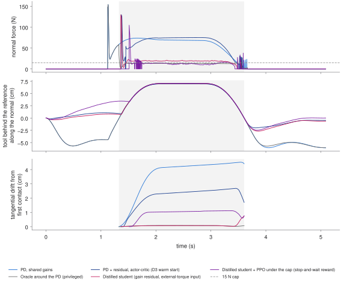
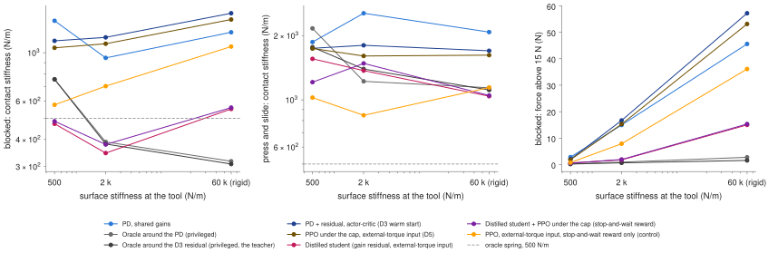
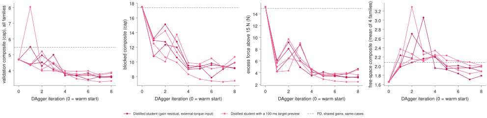
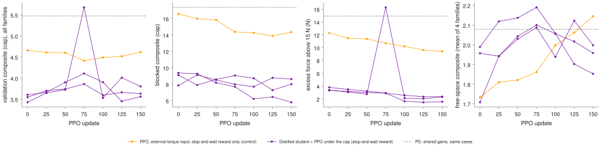

The checkpoint of report 12 left one behaviour unsolved: no learned controller waits at a blocked surface with a bounded force (every controller, the tuned PD included, pushes 40 to 60 N above the 15 N cap, with an apparent stiffness of 1100 to 1450 N/m), and none presses to a target. The advisor refined the wanted response from "compliance" to an impedance: yield in proportion to the proprioceptive error, like a spring whose stiffness depends on how hard the surface is, with safety paramount (no sustained torque that heats the motors or dents the surface). The questions of this round: what exactly is that behaviour, can it be written down and executed (an oracle with privileged knowledge of the surface), can a proprioceptive controller learn it by imitation where reinforcement learning did not find it by exploration, which hardware-realisable cues carry the contact information and how fast, and does the learned behaviour remain a spring on surfaces of different stiffness?
Three facts make the problem hard in this setup. Proprioceptive error alone cannot distinguish a blocked tool from an unmodelled payload: training payloads reach 3 kg, about 30 N of gravity error, twice the cap; the distinguishing information is the time structure of the error and the pattern of the external torque. The policies barely sense contact: a linear probe on the trunk features of the warm start and of the stage-1 PPO arms detects contact at 75% accuracy with a median delay of 0.3 to 0.7 s. And the plant had one surface stiffness, so hardness dependence could not be measured.
Target behaviour and oracle (ADR 0008). While the reference is inside a surface and the tool has reached it, the force pushed into the surface is a bounded spring on the actual error, push = clip(5 N + 500 N/m x e_in - d_n v_in, 5 N, 15 N), with e_in the tool's distance behind the reference along the inward normal and v_in its velocity into the surface (damping ratio 0.7 for the task-space inertia along the normal). On a rigid surface the bound is reached beyond 2 cm of error and the force stays at the cap; on a soft surface the tool sinks, the error stays small and the force stays on the linear part. In blocked references the tangential force holds the first-contact point (stop and wait); in press-and-slide references the base controller's tangential force is kept, since the slide is the task; on release the torque blends back to the base controller over 200 ms. The oracle (llc/controllers/oracle.py) implements this around any base controller using what a proprioceptive controller does not have: the surface location and normal, the reference's tool path, and the payload mass (an unmodelled payload presses on a table with its weight whatever the controller commands, so the oracle lifts it; a student must infer the payload from the approach). Around the shared PD it is the hardware-like ceiling of the protocol; around the frozen D3 residual it is the teacher. The impact transient of the blind approach is not the oracle's business.
Students (stage 1). DAgger: eight iterations of 48 training episodes from the contact-focused mixture (hold 0.15, free 0.2, policy 0.1, press-and-slide 0.25, blocked 0.3; the task family held out), the teacher driving with probability 1, 0.5, 0.25 and then 0, every student decision (10 ms) labelled with the teacher's torque at that state, aggregation up to 300 k decisions, torque regression through the student's output parameterisation (per-joint gain multipliers plus a torque residual, external-torque input, warm-started from the D3 residual converted exactly), validation after every iteration on the 32 fixed cases under the cap. Variant: the same student with a 100 ms target preview (the next 10 targets, 10 ms apart, relative to the current one). Three seeds each. Stage 2 fine-tunes the students with PPO under the cap reward with the stop-and-wait anchor (the tangential kernel of blocked windows around the first-contact point) and the 500 N/m press target; a control arm resumes the D5 external-torque PPO arm with the anchored reward only.
Protocol additions. A classical anticipatory baseline, the shared PD with the nominal inverse-dynamics feedforward of the reference, against which the preview variant must be read. Two held-out groups with the table and the wall replaced by a 2 kN/m and a 500 N/m surface (MuJoCo direct solref with a constant impedance over a 10 cm width, calibrated to about 21 N/m per unit of solref stiffness; eight cases each of the press-and-slide, blocked and task families). A new metric, contact stiffness: the mean normal force per metre of the tool's actual error along the normal while the reference is inside and the tool in contact, after the first 0.3 s; a spring on the error keeps it on every surface up to the force bound. Contact-sensing metrics: a class-balanced linear probe from a controller's trunk features to the contact state and to the blocked state (fitted on even validation cases, tested on odd ones), its balanced accuracy, the detection delay after an onset and the fraction of onsets detected within 50 and 100 ms. The cue audit applies the same probes (and a 64-unit MLP) to candidate input windows built exactly as a policy holds them, on saved episodes of the PD and of the residual, with payload-carrying free motion as negatives. Allowed cues (advisor): proprioception, the commanded torque and the link-side joint torque minus the robot's own model (the external-torque estimate); the tool-frame wrench is shelved, jerk is not used, acceleration is audited only, the payload stays unknown.
Blocked family, 16 in-distribution test cases, means over cases (seeds pooled). The oracle rows are privileged (they know the surface); they are the ceiling of the protocol and the teacher of the distilled students.
| Controller | Force above 15 N (N) | Peak, 20 ms (N) | Drift (cm) | Moving | Apparent K (N/m) | Contact K (N/m) | Recovery (s) | Torque rate (Nm/s) |
|---|---|---|---|---|---|---|---|---|
| PD, shared gains | 45.6 | 90 | 3.23 | 0.31 | 1180 | 1242 | 0.37 | 71 |
| PD + inverse-dynamics feedforward | 44.2 | 85 | 3.25 | 0.30 | 1156 | 1222 | 0.37 | 120 |
| Oracle around the PD (privileged) | 2.8 | 71 | 0.17 | 0.04 | 314 | 317 | 1.33 | 111 |
| Oracle around the D3 residual (privileged, the teacher) | 1.6 | 64 | 0.18 | 0.05 | 305 | 308 | 0.96 | 80 |
| PD + residual, actor-critic (D3 warm start) | 57.2 | 93 | 1.94 | 0.26 | 1441 | 1518 | 0.67 | 65 |
| PPO, contact families (D4) | 41.4 | 73 | 0.90 | 0.21 | 1093 | 1152 | 0.70 | 102 |
| PPO under the cap, external-torque input (D5) | 53.1 | 91 | 2.03 | 0.26 | 1348 | 1421 | 0.57 | 107 |
| Distilled student (gain residual, external-torque input) | 15.0 | 72 | 0.42 | 0.12 | 527 | 552 | 0.54 | 110 |
| Distilled student with a 100 ms target preview | 15.7 | 73 | 0.43 | 0.11 | 549 | 575 | 0.64 | 105 |
| Distilled student + PPO under the cap (stop-and-wait reward) | 15.3 | 66 | 0.80 | 0.17 | 518 | 560 | 0.63 | 117 |
| PPO, external-torque input, stop-and-wait reward only (control) | 36.1 | 79 | 1.94 | 0.27 | 999 | 1068 | 0.59 | 166 |

Held-out groups with the table and the wall replaced by a 2 kN/m and a 500 N/m surface (training stays on the rigid plant). A spring on the error keeps its stiffness on every surface until the force bound; a force setpoint does not.

| Cue set | Inputs | Linear acc. | MLP acc. | Delay (ms) | Within 50 ms | Within 100 ms | Payload false positives | Blocked: MLP acc. | Blocked delay (ms) |
|---|---|---|---|---|---|---|---|---|---|
| error and velocity | 616 | 0.82 | 0.88 | 0 | 0.67 | 0.67 | 0.09 | 0.89 | 0 |
| error, velocity and commanded torque (D3 observation) | 910 | 0.82 | 0.86 | 0 | 0.69 | 0.69 | 0.03 | 0.86 | 0 |
| external torque (link-side torque minus the model) | 294 | 0.72 | 0.87 | 0 | 0.93 | 0.93 | 0.10 | 0.88 | 0 |
| acceleration (1 ms differences of the velocity) | 224 | 0.59 | 0.80 | 0 | 0.86 | 0.86 | 0.18 | 0.79 | 0 |
| target preview (100 ms) with the error | 98 | 0.82 | 0.87 | 0 | 0.70 | 0.70 | 0.18 | 0.87 | 0 |
| all of the above | 1498 | 0.84 | 0.92 | 0 | 0.91 | 0.92 | 0.14 | 0.90 | 0 |
| Cue set | Inputs | Linear acc. | MLP acc. | Delay (ms) | Within 50 ms | Within 100 ms | Payload false positives | Blocked: MLP acc. | Blocked delay (ms) |
|---|---|---|---|---|---|---|---|---|---|
| error and velocity | 616 | 0.86 | 0.86 | 0 | 0.78 | 0.79 | 0.10 | 0.86 | 0 |
| error, velocity and commanded torque (D3 observation) | 910 | 0.83 | 0.84 | 0 | 0.61 | 0.62 | 0.03 | 0.86 | 0 |
| external torque (link-side torque minus the model) | 294 | 0.77 | 0.88 | 0 | 0.94 | 0.95 | 0.11 | 0.89 | 0 |
| acceleration (1 ms differences of the velocity) | 224 | 0.58 | 0.81 | 0 | 0.91 | 0.92 | 0.16 | 0.74 | 0 |
| target preview (100 ms) with the error | 98 | 0.86 | 0.86 | 0 | 0.62 | 0.62 | 0.14 | 0.86 | 0 |
| all of the above | 1498 | 0.86 | 0.90 | 0 | 0.93 | 0.93 | 0.14 | 0.89 | 0 |
| Controller | Contact: linear acc. | Delay (ms) | Within 50 ms | Within 100 ms | Blocked: acc. | Blocked delay (ms) | Stiffness multiplier, contact / free | Residual normal force, contact / free (N) |
|---|---|---|---|---|---|---|---|---|
| PD + residual, actor-critic (D3 warm start) | 0.76 | 0 | 0.19 | 0.20 | 0.76 | 0 | - | +3.5 / +11.2 |
| PPO under the cap, external-torque input (D5) | 0.75 | 0 | 0.31 | 0.32 | 0.75 | 0 | 1.00 / 1.00 | +9.5 / +12.7 |
| Distilled student (gain residual, external-torque input) | 0.72 | 0 | 0.29 | 0.33 | 0.73 | 0 | 0.82 / 0.97 | +17.3 / +12.2 |
| Distilled student with a 100 ms target preview | 0.71 | 0 | 0.36 | 0.37 | 0.71 | 0 | 0.78 / 0.95 | +20.2 / +18.6 |
| Distilled student + PPO under the cap (stop-and-wait reward) | 0.65 | 0 | 0.33 | 0.34 | 0.65 | 0 | 0.84 / 0.97 | +23.7 / +19.4 |
| PPO, external-torque input, stop-and-wait reward only (control) | 0.74 | 0 | 0.33 | 0.36 | 0.74 | 0 | 1.00 / 1.00 | +17.5 / +16.5 |


| Group | Controller | Composite v2 | Composite (15 N cap) | Excess force above 30 N (N) | Excess force above 15 N (N) | Peak force (N) | Sustained peak, 20 ms (N) | Position RMSE (rad) | Diverged |
|---|---|---|---|---|---|---|---|---|---|
| In-distribution families | PD, shared gains | 4.29 | 5.95 | 6.53 | 10.4 | 142 | 81.3 | 0.0314 | 0 |
| In-distribution families | PD + inverse-dynamics feedforward | 4.13 | 5.68 | 5.98 | 9.64 | 126 | 72.6 | 0.0306 | 0 |
| In-distribution families | Oracle around the PD (privileged) | 4.14 | 4.32 | 0.727 | 1.51 | 141 | 74.2 | 0.0337 | 0 |
| In-distribution families | Oracle around the D3 residual (privileged, the teacher) | 2.76 | 2.97 | 0.463 | 1.05 | 90.2 | 49.2 | 0.0245 | 0 |
| In-distribution families | PD + residual, actor-critic (D3 warm start) | 3.33 | 4.98 | 7.05 | 10.4 | 89.7 | 56.9 | 0.0231 | 0 |
| In-distribution families | PPO, contact families (D4) | 3.55 | 4.63 | 4.48 | 7.26 | 59.2 | 38.5 | 0.0283 | 0 |
| In-distribution families | PPO under the cap, external-torque input (D5) | 3.3 | 4.86 | 6.47 | 9.67 | 90 | 56.6 | 0.0234 | 0 |
| In-distribution families | Distilled student (gain residual, external-torque input) | 2.92 | 3.46 | 1.9 | 3.09 | 89.9 | 50.4 | 0.0265 | 0 |
| In-distribution families | Distilled student with a 100 ms target preview | 3.03 | 3.6 | 2 | 3.3 | 93.7 | 52.4 | 0.0255 | 0 |
| In-distribution families | Distilled student + PPO under the cap (stop-and-wait reward) | 3.07 | 3.53 | 1.96 | 3.12 | 81.4 | 44.6 | 0.0283 | 0 |
| In-distribution families | PPO, external-torque input, stop-and-wait reward only (control) | 3.37 | 4.41 | 4.05 | 6.31 | 80.8 | 48 | 0.0249 | 0 |
| Held-out workspace (base yaw 1.2 to 2.6 rad) | PD, shared gains | 1.62 | 1.62 | 0 | 0 | — | — | 0.0417 | 0 |
| Held-out workspace (base yaw 1.2 to 2.6 rad) | PD + inverse-dynamics feedforward | 1.5 | 1.5 | 0 | 0 | — | — | 0.0394 | 0 |
| Held-out workspace (base yaw 1.2 to 2.6 rad) | Oracle around the PD (privileged) | 1.62 | 1.62 | 0 | 0 | — | — | 0.0417 | 0 |
| Held-out workspace (base yaw 1.2 to 2.6 rad) | Oracle around the D3 residual (privileged, the teacher) | 1.23 | 1.23 | 0 | 0 | — | — | 0.0332 | 0 |
| Held-out workspace (base yaw 1.2 to 2.6 rad) | PD + residual, actor-critic (D3 warm start) | 1.23 | 1.23 | 0 | 0 | — | — | 0.0332 | 0 |
| Held-out workspace (base yaw 1.2 to 2.6 rad) | PPO, contact families (D4) | 1.68 | 1.68 | 0 | 0 | — | — | 0.0443 | 0 |
| Held-out workspace (base yaw 1.2 to 2.6 rad) | PPO under the cap, external-torque input (D5) | 1.25 | 1.25 | 0 | 0 | — | — | 0.0332 | 0 |
| Held-out workspace (base yaw 1.2 to 2.6 rad) | Distilled student (gain residual, external-torque input) | 1.62 | 1.62 | 3.87 | 4.14 | — | — | 0.0446 | 0 |
| Held-out workspace (base yaw 1.2 to 2.6 rad) | Distilled student with a 100 ms target preview | 1.61 | 1.61 | 0 | 0 | — | — | 0.0409 | 0 |
| Held-out workspace (base yaw 1.2 to 2.6 rad) | Distilled student + PPO under the cap (stop-and-wait reward) | 1.75 | 1.75 | 3.87 | 4.14 | — | — | 0.0476 | 0 |
| Held-out workspace (base yaw 1.2 to 2.6 rad) | PPO, external-torque input, stop-and-wait reward only (control) | 1.34 | 1.34 | 0 | 0 | — | — | 0.0347 | 0 |
| Speed x1.5 | PD, shared gains | 4.33 | 5.41 | 3.4 | 6.91 | 296 | 132 | 0.0356 | 0 |
| Speed x1.5 | PD + inverse-dynamics feedforward | 4.02 | 5.09 | 3.18 | 6.64 | 256 | 114 | 0.0328 | 0 |
| Speed x1.5 | Oracle around the PD (privileged) | 4.14 | 4.73 | 1.76 | 3.22 | 298 | 132 | 0.0337 | 0 |
| Speed x1.5 | Oracle around the D3 residual (privileged, the teacher) | 2.55 | 3.15 | 1.01 | 2.11 | 128 | 63.6 | 0.0271 | 0 |
| Speed x1.5 | PD + residual, actor-critic (D3 warm start) | 2.48 | 3.28 | 0.939 | 3.12 | 108 | 53.4 | 0.0273 | 0 |
| Speed x1.5 | PPO, contact families (D4) | 2.98 | 3.44 | 0.377 | 1.7 | 45.6 | 20 | 0.0367 | 0 |
| Speed x1.5 | PPO under the cap, external-torque input (D5) | 2.57 | 3.3 | 0.94 | 2.86 | 113 | 55.5 | 0.0274 | 0 |
| Speed x1.5 | Distilled student (gain residual, external-torque input) | 2.67 | 3.23 | 0.804 | 2.1 | 113 | 55.6 | 0.0302 | 0 |
| Speed x1.5 | Distilled student with a 100 ms target preview | 2.69 | 3.27 | 0.842 | 2.22 | 118 | 58 | 0.0286 | 0 |
| Speed x1.5 | Distilled student + PPO under the cap (stop-and-wait reward) | 2.71 | 3.25 | 0.78 | 2.18 | 96 | 45.6 | 0.0308 | 0 |
| Speed x1.5 | PPO, external-torque input, stop-and-wait reward only (control) | 2.75 | 3.16 | 0.769 | 1.69 | 110 | 51 | 0.0286 | 0 |
| Speed x2 | PD, shared gains | 4.77 | 5.81 | 4.19 | 7.54 | 358 | 150 | 0.0416 | 0 |
| Speed x2 | PD + inverse-dynamics feedforward | 4.3 | 5.25 | 3.33 | 6.45 | 328 | 138 | 0.0373 | 0 |
| Speed x2 | Oracle around the PD (privileged) | 4.56 | 5.04 | 2.39 | 3.77 | 354 | 146 | 0.04 | 0 |
| Speed x2 | Oracle around the D3 residual (privileged, the teacher) | 2.95 | 3.48 | 1.27 | 2.27 | 128 | 62.3 | 0.0336 | 0 |
| Speed x2 | PD + residual, actor-critic (D3 warm start) | 2.88 | 3.56 | 1.19 | 3.18 | 105 | 50.9 | 0.0338 | 0 |
| Speed x2 | PPO, contact families (D4) | 3.37 | 3.84 | 0.675 | 2.03 | 39.6 | 14.6 | 0.0433 | 0 |
| Speed x2 | PPO under the cap, external-torque input (D5) | 3 | 3.64 | 1.24 | 3 | 113 | 54.6 | 0.034 | 0 |
| Speed x2 | Distilled student (gain residual, external-torque input) | 3.05 | 3.54 | 1.11 | 2.4 | 114 | 54.8 | 0.0351 | 0 |
| Speed x2 | Distilled student with a 100 ms target preview | 3.1 | 3.62 | 1.16 | 2.47 | 116 | 56.7 | 0.0355 | 0 |
| Speed x2 | Distilled student + PPO under the cap (stop-and-wait reward) | 3.08 | 3.53 | 0.975 | 2.19 | 95.4 | 43.1 | 0.0357 | 0 |
| Speed x2 | PPO, external-torque input, stop-and-wait reward only (control) | 3.27 | 3.8 | 1.46 | 2.71 | 109 | 50 | 0.0354 | 0 |
| Payload 3 kg | PD, shared gains | 9.9 | 12.6 | 19 | 27.3 | 235 | 120 | 0.0565 | 0 |
| Payload 3 kg | PD + inverse-dynamics feedforward | 9.86 | 12.5 | 18.8 | 26.9 | 234 | 117 | 0.0567 | 0 |
| Payload 3 kg | Oracle around the PD (privileged) | 8.27 | 8.29 | 3.25 | 5.76 | 234 | 114 | 0.0496 | 0 |
| Payload 3 kg | Oracle around the D3 residual (privileged, the teacher) | 4.43 | 4.89 | 1.06 | 2.47 | 122 | 62.9 | 0.0226 | 0 |
| Payload 3 kg | PD + residual, actor-critic (D3 warm start) | 4.57 | 7.56 | 10.5 | 19.3 | 118 | 66.2 | 0.0208 | 0 |
| Payload 3 kg | PPO, contact families (D4) | 4.92 | 7.03 | 7.21 | 14.6 | 80.9 | 46.3 | 0.0261 | 0 |
| Payload 3 kg | PPO under the cap, external-torque input (D5) | 4.5 | 7.32 | 9.58 | 17.9 | 120 | 66.9 | 0.0208 | 0 |
| Payload 3 kg | Distilled student (gain residual, external-torque input) | 4.44 | 5.74 | 1.38 | 7.5 | 121 | 63.1 | 0.0257 | 0 |
| Payload 3 kg | Distilled student with a 100 ms target preview | 4.52 | 5.9 | 1.51 | 7.91 | 125 | 65.5 | 0.0259 | 0 |
| Payload 3 kg | Distilled student + PPO under the cap (stop-and-wait reward) | 4.3 | 5.59 | 1.43 | 7.14 | 110 | 57 | 0.0247 | 0 |
| Payload 3 kg | PPO, external-torque input, stop-and-wait reward only (control) | 4.21 | 6.17 | 5.28 | 11.3 | 121 | 64.5 | 0.0211 | 0 |
| Held-out robot instances (doubled deviations) | PD, shared gains | 4.48 | 6.16 | 6.78 | 11.7 | 165 | 93.1 | 0.0348 | 0 |
| Held-out robot instances (doubled deviations) | PD + inverse-dynamics feedforward | 4.4 | 5.95 | 6.22 | 11 | 167 | 91.2 | 0.0339 | 0 |
| Held-out robot instances (doubled deviations) | Oracle around the PD (privileged) | 4.15 | 4.15 | 1.01 | 2.36 | 162 | 87.3 | 0.0375 | 0 |
| Held-out robot instances (doubled deviations) | Oracle around the D3 residual (privileged, the teacher) | 3.13 | 3.36 | 0.686 | 1.95 | 114 | 63.6 | 0.0283 | 0 |
| Held-out robot instances (doubled deviations) | PD + residual, actor-critic (D3 warm start) | 3.86 | 6.02 | 8.8 | 14.1 | 108 | 68.6 | 0.0268 | 0 |
| Held-out robot instances (doubled deviations) | PPO, contact families (D4) | 3.89 | 5.24 | 5.7 | 10.1 | 70.3 | 46.2 | 0.0344 | 0 |
| Held-out robot instances (doubled deviations) | PPO under the cap, external-torque input (D5) | 3.78 | 5.8 | 8.18 | 13.2 | 109 | 68.3 | 0.027 | 0 |
| Held-out robot instances (doubled deviations) | Distilled student (gain residual, external-torque input) | 3.1 | 3.55 | 0.973 | 3.26 | 103 | 57.3 | 0.033 | 0 |
| Held-out robot instances (doubled deviations) | Distilled student with a 100 ms target preview | 3.17 | 3.62 | 0.959 | 3.33 | 104 | 58 | 0.0296 | 0 |
| Held-out robot instances (doubled deviations) | Distilled student + PPO under the cap (stop-and-wait reward) | 3.28 | 3.64 | 1.11 | 3.33 | 92.4 | 51 | 0.0351 | 0 |
| Held-out robot instances (doubled deviations) | PPO, external-torque input, stop-and-wait reward only (control) | 3.63 | 4.88 | 4.71 | 8.38 | 105 | 61.3 | 0.0289 | 0 |
| Compliant surface, 2 kN/m (held out) | PD, shared gains | 3.72 | 5.52 | 2.56 | 8.52 | 33.7 | 32.1 | 0.0197 | 0 |
| Compliant surface, 2 kN/m (held out) | PD + inverse-dynamics feedforward | 3.72 | 5.39 | 2.26 | 7.95 | 31.6 | 29.9 | 0.0198 | 0 |
| Compliant surface, 2 kN/m (held out) | Oracle around the PD (privileged) | 3.83 | 3.83 | 0.101 | 0.945 | 31.1 | 27.7 | 0.0251 | 0 |
| Compliant surface, 2 kN/m (held out) | Oracle around the D3 residual (privileged, the teacher) | 2.49 | 2.63 | 0.00345 | 0.493 | 21.5 | 18.5 | 0.016 | 0 |
| Compliant surface, 2 kN/m (held out) | PD + residual, actor-critic (D3 warm start) | 2.95 | 4.48 | 2.13 | 6.56 | 23.4 | 22.7 | 0.0122 | 0 |
| Compliant surface, 2 kN/m (held out) | PPO, contact families (D4) | 3.58 | 4.35 | 1.06 | 4.08 | 18.6 | 18.2 | 0.0173 | 0 |
| Compliant surface, 2 kN/m (held out) | PPO under the cap, external-torque input (D5) | 2.89 | 4.31 | 1.87 | 6.02 | 22.6 | 21.6 | 0.0124 | 0 |
| Compliant surface, 2 kN/m (held out) | Distilled student (gain residual, external-torque input) | 2.5 | 2.77 | 0.0172 | 1.01 | 17.4 | 15.1 | 0.0174 | 0 |
| Compliant surface, 2 kN/m (held out) | Distilled student with a 100 ms target preview | 2.66 | 2.93 | 0.0204 | 1.09 | 17.6 | 15.2 | 0.0169 | 0 |
| Compliant surface, 2 kN/m (held out) | Distilled student + PPO under the cap (stop-and-wait reward) | 3.04 | 3.11 | 0.0496 | 1.09 | 16.1 | 14.3 | 0.0231 | 0 |
| Compliant surface, 2 kN/m (held out) | PPO, external-torque input, stop-and-wait reward only (control) | 3.04 | 3.81 | 0.641 | 3.3 | 17.5 | 15.9 | 0.0147 | 0 |
| Compliant surface, 500 N/m (held out) | PD, shared gains | 3.73 | 4 | 0.0972 | 1.25 | 17.6 | 16.6 | 0.0168 | 0 |
| Compliant surface, 500 N/m (held out) | PD + inverse-dynamics feedforward | 3.78 | 4.02 | 0.0842 | 1.15 | 16.8 | 15.7 | 0.0172 | 0 |
| Compliant surface, 500 N/m (held out) | Oracle around the PD (privileged) | 3.57 | 3.41 | 3.33e-07 | 0.207 | 18.8 | 17.7 | 0.021 | 0 |
| Compliant surface, 500 N/m (held out) | Oracle around the D3 residual (privileged, the teacher) | 2.53 | 2.66 | 0 | 0.164 | 15.1 | 14.2 | 0.0127 | 0 |
| Compliant surface, 500 N/m (held out) | PD + residual, actor-critic (D3 warm start) | 2.55 | 2.92 | 0 | 0.703 | 12 | 11.8 | 0.00948 | 0 |
| Compliant surface, 500 N/m (held out) | PPO, contact families (D4) | 3.63 | 3.67 | 0 | 0.333 | 9.52 | 9.38 | 0.0153 | 0 |
| Compliant surface, 500 N/m (held out) | PPO under the cap, external-torque input (D5) | 2.51 | 2.85 | 0 | 0.638 | 11.6 | 11.4 | 0.0097 | 0 |
| Compliant surface, 500 N/m (held out) | Distilled student (gain residual, external-torque input) | 2.37 | 2.52 | 0 | 0.228 | 10.5 | 10.1 | 0.0124 | 0 |
| Compliant surface, 500 N/m (held out) | Distilled student with a 100 ms target preview | 2.53 | 2.68 | 0 | 0.267 | 10.6 | 10.1 | 0.0122 | 0 |
| Compliant surface, 500 N/m (held out) | Distilled student + PPO under the cap (stop-and-wait reward) | 2.88 | 2.81 | 0 | 0.193 | 9.98 | 9.57 | 0.0185 | 0 |
| Compliant surface, 500 N/m (held out) | PPO, external-torque input, stop-and-wait reward only (control) | 3.02 | 3.12 | 0 | 0.292 | 9.13 | 8.75 | 0.0124 | 0 |
| Regime | Metric | PD, shared gains | PD + inverse-dynamics feedforward | Oracle around the PD (privileged) | Oracle around the D3 residual (privileged, the teacher) | PD + residual, actor-critic (D3 warm start) | PPO, contact families (D4) | PPO under the cap, external-torque input (D5) | Distilled student (gain residual, external-torque input) | Distilled student with a 100 ms target preview | Distilled student + PPO under the cap (stop-and-wait reward) | PPO, external-torque input, stop-and-wait reward only (control) |
|---|---|---|---|---|---|---|---|---|---|---|---|---|
| Hold | Position RMSE (rad) | 0.0167 | 0.0167 (0) | 0.0167 (0) | 0.00613 (-0.011*) | 0.00613 (-0.011*) | 0.00628 (-0.01*) | 0.0063 (-0.01*) | 0.00661 (-0.01*) | 0.00742 (-0.0093*) | 0.00685 (-0.0099*) | 0.00844 (-0.0083*) |
| Hold | Peak deflection under 10 N pulse (m) | 0.016 | 0.016 (0) | 0.016 (0) | 0.0118 (-0.0042*) | 0.0118 (-0.0042*) | 0.0132 (-0.0028) | 0.0125 (-0.0035*) | 0.0159 (-7.9e-05) | 0.0163 (0.00027) | 0.0147 (-0.0013) | 0.0147 (-0.0013) |
| Hold | Torque rate RMS (Nm/s) | 48.7 | 48.7 (0) | 48.7 (0) | 43.4 (-5.3*) | 43.4 (-5.3*) | 73.4 (25*) | 81.2 (32*) | 77 (28*) | 79.2 (30*) | 79.4 (31*) | 152 (1e+02*) |
| Free joint-space motion | Position RMSE (rad) | 0.0191 | 0.0147 (-0.0044*) | 0.0191 (0) | 0.0134 (-0.0057*) | 0.0134 (-0.0057*) | 0.0263 (0.0072*) | 0.0136 (-0.0055*) | 0.0179 (-0.0012) | 0.0156 (-0.0035) | 0.0187 (-0.00044) | 0.0167 (-0.0024) |
| Free joint-space motion | Torque rate RMS (Nm/s) | 52.9 | 51.8 (-1.1*) | 52.9 (0) | 44.5 (-8.4*) | 44.5 (-8.4*) | 80.3 (27*) | 74.7 (22*) | 80.2 (27*) | 75.8 (23*) | 81.9 (29*) | 115 (62*) |
| Policy-like targets | Position RMSE (rad) | 0.0553 | 0.0553 (0) | 0.0553 (0) | 0.047 (-0.0084*) | 0.047 (-0.0084*) | 0.057 (0.0017) | 0.047 (-0.0083*) | 0.0519 (-0.0035) | 0.0474 (-0.0079*) | 0.0523 (-0.0031) | 0.0474 (-0.0079*) |
| Policy-like targets | Torque rate RMS (Nm/s) | 1.77e+03 | 1.77e+03 (0) | 1.77e+03 (0) | 1.57e+03 (-2e+02*) | 1.57e+03 (-2e+02*) | 1.71e+03 (-53*) | 1.6e+03 (-1.7e+02*) | 1.65e+03 (-1.1e+02*) | 1.67e+03 (-99*) | 1.65e+03 (-1.1e+02*) | 1.68e+03 (-89*) |
| Step targets | Position RMSE (rad) | 0.0444 | 0.0444 (0) | 0.0444 (0) | 0.0382 (-0.0062*) | 0.0382 (-0.0062*) | 0.041 (-0.0034*) | 0.0382 (-0.0062*) | 0.0386 (-0.0058*) | 0.039 (-0.0054*) | 0.039 (-0.0054*) | 0.0386 (-0.0058*) |
| Step targets | Settling time after step (s) | 0.663 | 0.663 (0) | 0.663 (0) | 0.391 (-0.27*) | 0.391 (-0.27*) | 0.565 (-0.098) | 0.399 (-0.26*) | 0.409 (-0.25*) | 0.451 (-0.21*) | 0.422 (-0.24*) | 0.474 (-0.19*) |
| Step targets | Step overshoot (-) | 0.0176 | 0.0176 (0) | 0.0176 (0) | 0.0139 (-0.0037) | 0.0139 (-0.0037) | 0.00746 (-0.01*) | 0.0144 (-0.0033) | 0.0218 (0.0041) | 0.0218 (0.0042) | 0.0198 (0.0022) | 0.0158 (-0.0019) |
| Contact (tilt, depth, slide) | Excess contact force above 30 N (mean while in contact) (N) | 8.95 | 6.92 (-2*) | 2.15 (-6.8*) | 1.7 (-7.3*) | 5.62 (-3.3*) | 3.54 (-5.4*) | 5.55 (-3.4*) | 1.85 (-7.1*) | 2.47 (-6.5*) | 1.94 (-7*) | 3.84 (-5.1*) |
| Contact (tilt, depth, slide) | Excess contact force above the 15 N cap (mean while in contact) (N) | 16.1 | 13.2 (-3*) | 3.97 (-12*) | 3.78 (-12*) | 12.5 (-3.6) | 8.21 (-7.9*) | 11.9 (-4.2) | 4.69 (-11*) | 5.71 (-10*) | 4.79 (-11*) | 7.32 (-8.8*) |
| Contact (tilt, depth, slide) | Peak normal force (N) | 169 | 176 (6.2) | 172 (3) | 114 (-55*) | 106 (-63*) | 56.2 (-1.1e+02*) | 108 (-62*) | 112 (-57*) | 121 (-48) | 98.3 (-71*) | 101 (-68*) |
| Contact (tilt, depth, slide) | Peak of the 20 ms low-pass filtered normal force (sustained force) (N) | 88.8 | 88.8 (0.0047) | 86.9 (-1.9) | 63.1 (-26*) | 60.4 (-28*) | 32.4 (-56*) | 61.4 (-27) | 60.7 (-28*) | 65.1 (-24) | 52.6 (-36*) | 54.1 (-35*) |
| Contact (tilt, depth, slide) | Feasible-direction tool error (m) | 0.0403 | 0.0399 (-0.00036) | 0.0396 (-0.00067) | 0.0222 (-0.018*) | 0.0222 (-0.018*) | 0.0259 (-0.014) | 0.0227 (-0.018*) | 0.0242 (-0.016*) | 0.0246 (-0.016*) | 0.0248 (-0.015*) | 0.0249 (-0.015) |
| Contact (tilt, depth, slide) | Press-phase force deficit below 5 N (N) | 1.39 | 1.47 (0.078) | 0.625 (-0.77) | 0.0842 (-1.3*) | 0.333 (-1.1*) | 1.03 (-0.36) | 0.441 (-0.95) | 0.512 (-0.88*) | 0.585 (-0.81*) | 0.649 (-0.74) | 1.22 (-0.17) |
| Contact (tilt, depth, slide) | Contact losses of 5 ms or more during contact phase (-) | 9.5 | 8.56 (-0.94) | 17.7 (8.2) | 23.8 (14) | 18.4 (8.9) | 34.1 (25*) | 22.1 (13) | 26.3 (17) | 26.6 (17) | 27.7 (18*) | 28.4 (19*) |
| Contact (tilt, depth, slide) | Contact losses of 5 ms or more per second of press phase (1/s) | 4.33 | 3.81 (-0.52) | 8.97 (4.6) | 11.9 (7.6*) | 8.58 (4.2) | 13.6 (9.3*) | 9.4 (5.1) | 11.9 (7.5*) | 12 (7.7) | 12.2 (7.9*) | 12.5 (8.2) |
| Contact (tilt, depth, slide) | Contact stiffness: mean normal force per metre of actual tool error along the inward normal while the reference is inside and the tool in contact (after the first 0.3 s of contact) (N/m) | 2.08e+03 | 2e+03 (-73*) | 1.14e+03 (-9.6e+02*) | 1.11e+03 (-9.4e+02*) | 1.7e+03 (-3.7e+02) | 1.43e+03 (-6.5e+02*) | 1.62e+03 (-4.7e+02) | 1.04e+03 (-9.6e+02*) | 1.12e+03 (-1e+03*) | 1.05e+03 (-9.6e+02*) | 1.14e+03 (-9.4e+02*) |
| Blocked reference | Excess contact force above 30 N (mean while in contact) (N) | 32.7 | 31.5 (-1.2*) | 1.58 (-31*) | 0.936 (-32*) | 43 (10*) | 27.8 (-4.9*) | 39.1 (6.4*) | 10.7 (-22*) | 11 (-22*) | 11 (-22*) | 24.4 (-8.3*) |
| Blocked reference | Excess contact force above the 15 N cap (mean while in contact) (N) | 45.6 | 44.2 (-1.4*) | 2.76 (-43*) | 1.58 (-44*) | 57.2 (12*) | 41.4 (-4.2) | 53.1 (7.6*) | 15 (-31*) | 15.7 (-30*) | 15.3 (-30*) | 36.1 (-9.5*) |
| Blocked reference | Peak normal force (N) | 134 | 123 (-11*) | 126 (-8.2) | 116 (-18) | 127 (-7.3) | 99.8 (-34*) | 127 (-7.1) | 118 (-16*) | 119 (-15) | 112 (-22) | 117 (-17*) |
| Blocked reference | Peak of the 20 ms low-pass filtered normal force (sustained force) (N) | 90.4 | 85.1 (-5.3*) | 71 (-19*) | 64.2 (-26*) | 92.8 (2.4) | 73.1 (-17*) | 91.3 (0.93) | 71.5 (-19*) | 72.7 (-18*) | 65.9 (-25*) | 78.5 (-12) |
| Blocked reference | Blocked: mean tangential distance of the tool from its first-contact point while the reference is inside the surface (m) | 0.0323 | 0.0325 (0.00021) | 0.00166 (-0.031*) | 0.00176 (-0.031*) | 0.0194 (-0.013*) | 0.00903 (-0.023*) | 0.0203 (-0.012*) | 0.00419 (-0.028*) | 0.00428 (-0.028*) | 0.00803 (-0.024*) | 0.0194 (-0.013*) |
| Blocked reference | Blocked: fraction of the time in contact with the tool moving faster than 1 cm/s while the reference is inside the surface (-) | 0.312 | 0.304 (-0.0078*) | 0.0421 (-0.27*) | 0.0464 (-0.27*) | 0.262 (-0.05*) | 0.205 (-0.11*) | 0.263 (-0.048*) | 0.117 (-0.19*) | 0.113 (-0.2*) | 0.17 (-0.14*) | 0.267 (-0.045*) |
| Blocked reference | Apparent stiffness: mean normal force per metre of reference depth while blocked (after the first 0.3 s of contact) (N/m) | 1.18e+03 | 1.16e+03 (-24*) | 314 (-8.7e+02*) | 305 (-8.7e+02*) | 1.44e+03 (2.6e+02*) | 1.09e+03 (-87) | 1.35e+03 (1.7e+02) | 527 (-6.5e+02*) | 549 (-6.3e+02*) | 518 (-6.6e+02*) | 999 (-1.8e+02) |
| Blocked reference | Contact stiffness: mean normal force per metre of actual tool error along the inward normal while the reference is inside and the tool in contact (after the first 0.3 s of contact) (N/m) | 1.24e+03 | 1.22e+03 (-20*) | 317 (-9.2e+02*) | 308 (-9.3e+02*) | 1.52e+03 (2.8e+02*) | 1.15e+03 (-90) | 1.42e+03 (1.8e+02*) | 552 (-6.9e+02*) | 575 (-6.7e+02*) | 560 (-6.8e+02*) | 1.07e+03 (-1.7e+02) |
| Blocked reference | Recovery after a blocked reference returns (s) | 0.367 | 0.368 (0.00031) | 1.33 (0.96*) | 0.957 (0.59*) | 0.668 (0.3) | 0.699 (0.33) | 0.566 (0.2) | 0.537 (0.17) | 0.641 (0.27) | 0.633 (0.27) | 0.59 (0.22) |
| Blocked reference | Feasible-direction tool error (m) | 0.0376 | 0.0385 (0.00087*) | 0.0381 (0.00047) | 0.0178 (-0.02*) | 0.0228 (-0.015*) | 0.0313 (-0.0064) | 0.0232 (-0.014*) | 0.0173 (-0.02*) | 0.0177 (-0.02*) | 0.0279 (-0.0097) | 0.0262 (-0.011*) |
| Task sequence | Excess contact force above 30 N (mean while in contact) (N) | 3.86 | 3.31 (-0.54*) | 1.22 (-2.6*) | 0.102 (-3.8*) | 0.171 (-3.7*) | 0.0352 (-3.8*) | 0.156 (-3.7*) | 0.115 (-3.7*) | 0.14 (-3.7*) | 0.0915 (-3.8*) | 0.0823 (-3.8*) |
| Task sequence | Excess contact force above the 15 N cap (mean while in contact) (N) | 10.7 | 9.89 (-0.82*) | 3.67 (-7*) | 1.11 (-9.6*) | 2.15 (-8.6*) | 1.24 (-9.5*) | 1.85 (-8.9*) | 1.04 (-9.7*) | 1.08 (-9.6*) | 0.908 (-9.8*) | 0.695 (-10*) |
| Task sequence | Peak normal force (N) | 123 | 79.5 (-43*) | 124 (1*) | 40.3 (-83*) | 36.5 (-86*) | 21.6 (-1e+02*) | 35.3 (-87*) | 39.6 (-83*) | 40.6 (-82*) | 34.2 (-89*) | 24.4 (-98*) |
| Task sequence | Peak of the 20 ms low-pass filtered normal force (sustained force) (N) | 64.7 | 43.8 (-21*) | 64.8 (0.18) | 20.4 (-44*) | 17.5 (-47*) | 9.91 (-55*) | 17 (-48*) | 18.9 (-46*) | 19.5 (-45*) | 15.4 (-49*) | 11.5 (-53*) |
| Task sequence | Feasible-direction tool error (m) | 0.0241 | 0.0241 (-2.9e-05) | 0.0231 (-0.0011*) | 0.0143 (-0.0098*) | 0.014 (-0.01*) | 0.0241 (8.6e-06) | 0.0143 (-0.0099*) | 0.0144 (-0.0097*) | 0.0151 (-0.0091*) | 0.0175 (-0.0067) | 0.0181 (-0.006) |
| Task sequence | Press-phase force deficit below 5 N (N) | 0.244 | 0.272 (0.028) | 0 (-0.24) | 0.938 (0.69*) | 1.45 (1.2*) | 2.55 (2.3*) | 1.68 (1.4*) | 1.68 (1.4*) | 1.71 (1.5*) | 2.02 (1.8*) | 2.75 (2.5*) |
| Task sequence | Contact losses of 5 ms or more per second of press phase (1/s) | 11.7 | 11.5 (-0.21) | 20.2 (8.6) | 16.2 (4.6) | 13.3 (1.6) | 12.2 (0.49) | 14.7 (3) | 18.6 (6.9) | 17 (5.3) | 16.3 (4.6) | 12.5 (0.79) |
| Regime | Metric | PD, shared gains | PD + inverse-dynamics feedforward | Oracle around the PD (privileged) | Oracle around the D3 residual (privileged, the teacher) | PD + residual, actor-critic (D3 warm start) | PPO, contact families (D4) | PPO under the cap, external-torque input (D5) | Distilled student (gain residual, external-torque input) | Distilled student with a 100 ms target preview | Distilled student + PPO under the cap (stop-and-wait reward) | PPO, external-torque input, stop-and-wait reward only (control) |
|---|---|---|---|---|---|---|---|---|---|---|---|---|
| Free joint-space motion | Position RMSE (rad) | 0.0263 | 0.0217 (-0.0046*) | 0.0263 (0) | 0.0146 (-0.012*) | 0.0146 (-0.012*) | 0.027 (0.00077) | 0.0145 (-0.012*) | 0.0229 (-0.0034) | 0.027 (0.00076) | 0.0276 (0.0013) | 0.0163 (-0.01*) |
| Free joint-space motion | Torque rate RMS (Nm/s) | 54.7 | 53.8 (-0.91*) | 54.7 (0) | 46.2 (-8.6*) | 46.1 (-8.6*) | 74.2 (20*) | 73.2 (18*) | 92.3 (38*) | 98.8 (44*) | 97.6 (43*) | 110 (56*) |
| Policy-like targets | Position RMSE (rad) | 0.0572 | 0.0572 (0) | 0.0572 (0) | 0.0518 (-0.0054*) | 0.0518 (-0.0054*) | 0.0616 (0.0044) | 0.0518 (-0.0054*) | 0.0663 (0.0091) | 0.0548 (-0.0024) | 0.0676 (0.01) | 0.0532 (-0.004) |
| Policy-like targets | Torque rate RMS (Nm/s) | 1.82e+03 | 1.82e+03 (0) | 1.82e+03 (0) | 1.62e+03 (-1.9e+02*) | 1.62e+03 (-1.9e+02*) | 1.78e+03 (-41) | 1.65e+03 (-1.7e+02*) | 1.68e+03 (-1.3e+02*) | 1.68e+03 (-1.4e+02*) | 1.67e+03 (-1.4e+02*) | 1.72e+03 (-1e+02*) |
| Regime | Metric | PD, shared gains | PD + inverse-dynamics feedforward | Oracle around the PD (privileged) | Oracle around the D3 residual (privileged, the teacher) | PD + residual, actor-critic (D3 warm start) | PPO, contact families (D4) | PPO under the cap, external-torque input (D5) | Distilled student (gain residual, external-torque input) | Distilled student with a 100 ms target preview | Distilled student + PPO under the cap (stop-and-wait reward) | PPO, external-torque input, stop-and-wait reward only (control) |
|---|---|---|---|---|---|---|---|---|---|---|---|---|
| Free joint-space motion | Position RMSE (rad) | 0.0248 | 0.0156 (-0.0092*) | 0.0248 (0) | 0.0189 (-0.0059*) | 0.0189 (-0.0059*) | 0.0334 (0.0085*) | 0.0193 (-0.0055*) | 0.0213 (-0.0035) | 0.0213 (-0.0035) | 0.022 (-0.0028) | 0.0227 (-0.0022) |
| Free joint-space motion | Torque rate RMS (Nm/s) | 63.4 | 61.7 (-1.8) | 63.4 (0) | 60.3 (-3.1) | 60.3 (-3.1) | 123 (60*) | 105 (41*) | 112 (48*) | 111 (48*) | 115 (51*) | 152 (89*) |
| Policy-like targets | Position RMSE (rad) | 0.0777 | 0.0777 (0) | 0.0777 (0) | 0.0654 (-0.012*) | 0.0654 (-0.012*) | 0.0794 (0.0017) | 0.0655 (-0.012*) | 0.0722 (-0.0055) | 0.0661 (-0.012*) | 0.0724 (-0.0053) | 0.0662 (-0.012*) |
| Policy-like targets | Torque rate RMS (Nm/s) | 1.95e+03 | 1.95e+03 (0) | 1.95e+03 (0) | 1.72e+03 (-2.3e+02*) | 1.72e+03 (-2.3e+02*) | 1.85e+03 (-94*) | 1.72e+03 (-2.3e+02*) | 1.82e+03 (-1.2e+02*) | 1.82e+03 (-1.3e+02*) | 1.83e+03 (-1.2e+02*) | 1.77e+03 (-1.8e+02*) |
| Contact (tilt, depth, slide) | Excess contact force above 30 N (mean while in contact) (N) | 8.14 | 8.56 (0.42) | 3.97 (-4.2*) | 3.44 (-4.7*) | 3.14 (-5*) | 1.32 (-6.8*) | 3.18 (-5*) | 2.54 (-5.6*) | 2.64 (-5.5*) | 2.5 (-5.6*) | 2.78 (-5.4*) |
| Contact (tilt, depth, slide) | Excess contact force above the 15 N cap (mean while in contact) (N) | 14.5 | 14.9 (0.43) | 6.69 (-7.8*) | 6.16 (-8.3*) | 10 (-4.4*) | 5.57 (-8.9*) | 9.25 (-5.2*) | 6.02 (-8.5*) | 6.41 (-8.1*) | 6.18 (-8.3*) | 5.89 (-8.6*) |
| Contact (tilt, depth, slide) | Peak normal force (N) | 295 | 323 (28) | 296 (1.5) | 188 (-1.1e+02) | 156 (-1.4e+02*) | 62.9 (-2.3e+02*) | 166 (-1.3e+02*) | 153 (-1.4e+02*) | 162 (-1.3e+02*) | 130 (-1.7e+02*) | 180 (-1.2e+02) |
| Contact (tilt, depth, slide) | Peak of the 20 ms low-pass filtered normal force (sustained force) (N) | 136 | 137 (1.8) | 135 (-0.96) | 93.3 (-42) | 78.8 (-57*) | 29.8 (-1.1e+02*) | 82.9 (-53*) | 76.2 (-59*) | 79.7 (-56*) | 63.2 (-72*) | 83.8 (-52*) |
| Contact (tilt, depth, slide) | Feasible-direction tool error (m) | 0.0299 | 0.0297 (-0.00024) | 0.0277 (-0.0022) | 0.0183 (-0.012) | 0.019 (-0.011) | 0.0255 (-0.0044) | 0.0195 (-0.01) | 0.0204 (-0.0095) | 0.0208 (-0.0091) | 0.0206 (-0.0094) | 0.0197 (-0.01) |
| Contact (tilt, depth, slide) | Press-phase force deficit below 5 N (N) | 1.1 | 1.61 (0.51*) | 0 (-1.1*) | 0.176 (-0.93) | 0.765 (-0.34) | 1.01 (-0.091) | 0.857 (-0.25) | 0.587 (-0.52) | 0.676 (-0.43) | 0.813 (-0.29) | 1.21 (0.1) |
| Contact (tilt, depth, slide) | Contact losses of 5 ms or more during contact phase (-) | 17.9 | 17.9 (0) | 30.8 (13) | 26.8 (8.9) | 19.4 (1.5) | 25.9 (8) | 22.1 (4.2) | 25 (7.1) | 22.7 (4.8) | 28 (10) | 24.5 (6.6) |
| Contact (tilt, depth, slide) | Contact losses of 5 ms or more per second of press phase (1/s) | 10.7 | 10.6 (-0.11) | 17.5 (6.7) | 16 (5.2) | 11 (0.22) | 12.8 (2.1) | 12 (1.3) | 13.5 (2.8) | 12.6 (1.8) | 15.2 (4.4) | 14 (3.2) |
| Contact (tilt, depth, slide) | Contact stiffness: mean normal force per metre of actual tool error along the inward normal while the reference is inside and the tool in contact (after the first 0.3 s of contact) (N/m) | 1.95e+03 | 1.85e+03 (-1e+02*) | 1.33e+03 (-6.5e+02) | 1.38e+03 (-6e+02) | 1.87e+03 (-4e+02) | 1.51e+03 (-7.6e+02*) | 1.75e+03 (-5.2e+02) | 1.32e+03 (-6.4e+02*) | 1.53e+03 (-7.4e+02*) | 1.35e+03 (-6.5e+02) | 1.17e+03 (-1.2e+03*) |
| Task sequence | Excess contact force above 30 N (mean while in contact) (N) | 5.47 | 4.16 (-1.3*) | 3.07 (-2.4*) | 0.605 (-4.9*) | 0.613 (-4.9*) | 0.186 (-5.3*) | 0.585 (-4.9*) | 0.677 (-4.8*) | 0.732 (-4.7*) | 0.625 (-4.9*) | 0.293 (-5.2*) |
| Task sequence | Excess contact force above the 15 N cap (mean while in contact) (N) | 13.1 | 11.6 (-1.5*) | 6.18 (-7*) | 2.29 (-11*) | 2.45 (-11*) | 1.22 (-12*) | 2.19 (-11*) | 2.38 (-11*) | 2.47 (-11*) | 2.55 (-11*) | 0.856 (-12*) |
| Task sequence | Peak normal force (N) | 298 | 189 (-1.1e+02*) | 299 (1) | 68.6 (-2.3e+02*) | 61.2 (-2.4e+02*) | 28.3 (-2.7e+02*) | 59.5 (-2.4e+02*) | 73 (-2.2e+02*) | 74.7 (-2.2e+02*) | 62.3 (-2.4e+02*) | 40.7 (-2.6e+02*) |
| Task sequence | Peak of the 20 ms low-pass filtered normal force (sustained force) (N) | 129 | 90.3 (-39*) | 129 (0.16) | 33.9 (-95*) | 28 (-1e+02*) | 10.2 (-1.2e+02*) | 28 (-1e+02*) | 35 (-94*) | 36.2 (-93*) | 27.9 (-1e+02*) | 18.3 (-1.1e+02*) |
| Task sequence | Feasible-direction tool error (m) | 0.0267 | 0.0269 (0.00016) | 0.0262 (-0.00052) | 0.016 (-0.011*) | 0.0156 (-0.011*) | 0.0281 (0.0014) | 0.0154 (-0.011*) | 0.0164 (-0.01*) | 0.0169 (-0.0098) | 0.019 (-0.0077) | 0.017 (-0.0097) |
| Task sequence | Press-phase force deficit below 5 N (N) | 0 | 0.0731 (0.073) | 0 (0) | 0.00771 (0.0077) | 1.1 (1.1) | 2.07 (2.1*) | 1.27 (1.3*) | 1.17 (1.2*) | 1.32 (1.3*) | 1.57 (1.6*) | 2.41 (2.4*) |
| Task sequence | Contact losses of 5 ms or more per second of press phase (1/s) | 14.3 | 14.5 (0.2) | 21 (6.6) | 20.4 (6.1) | 21.3 (6.9*) | 14.9 (0.52) | 20.1 (5.7) | 17.1 (2.8) | 17.3 (3) | 15.2 (0.86) | 13.8 (-0.58) |
| Regime | Metric | PD, shared gains | PD + inverse-dynamics feedforward | Oracle around the PD (privileged) | Oracle around the D3 residual (privileged, the teacher) | PD + residual, actor-critic (D3 warm start) | PPO, contact families (D4) | PPO under the cap, external-torque input (D5) | Distilled student (gain residual, external-torque input) | Distilled student with a 100 ms target preview | Distilled student + PPO under the cap (stop-and-wait reward) | PPO, external-torque input, stop-and-wait reward only (control) |
|---|---|---|---|---|---|---|---|---|---|---|---|---|
| Free joint-space motion | Position RMSE (rad) | 0.0326 | 0.0181 (-0.014*) | 0.0326 (0) | 0.0264 (-0.0062*) | 0.0264 (-0.0062*) | 0.0399 (0.0073*) | 0.0268 (-0.0058*) | 0.0286 (-0.004) | 0.0295 (-0.0031) | 0.0292 (-0.0034) | 0.0296 (-0.003) |
| Free joint-space motion | Torque rate RMS (Nm/s) | 92.6 | 88.7 (-3.9*) | 92.6 (0) | 96.1 (3.5) | 96.1 (3.5) | 181 (88*) | 166 (73*) | 187 (94*) | 191 (98*) | 191 (99*) | 236 (1.4e+02*) |
| Policy-like targets | Position RMSE (rad) | 0.0975 | 0.0975 (0) | 0.0975 (0) | 0.0827 (-0.015*) | 0.0827 (-0.015*) | 0.0969 (-0.00067) | 0.083 (-0.015*) | 0.083 (-0.015*) | 0.0838 (-0.014*) | 0.083 (-0.015*) | 0.0832 (-0.014*) |
| Policy-like targets | Torque rate RMS (Nm/s) | 1.99e+03 | 1.99e+03 (0) | 1.99e+03 (0) | 1.76e+03 (-2.3e+02*) | 1.76e+03 (-2.3e+02*) | 1.89e+03 (-97*) | 1.76e+03 (-2.3e+02*) | 1.86e+03 (-1.3e+02*) | 1.87e+03 (-1.2e+02*) | 1.86e+03 (-1.3e+02*) | 1.81e+03 (-1.8e+02*) |
| Contact (tilt, depth, slide) | Excess contact force above 30 N (mean while in contact) (N) | 9.4 | 7.17 (-2.2) | 5.18 (-4.2*) | 3.91 (-5.5*) | 3.69 (-5.7*) | 2.27 (-7.1*) | 3.86 (-5.5*) | 3.06 (-6.3*) | 3.22 (-6.2*) | 2.68 (-6.7*) | 5.13 (-4.3) |
| Contact (tilt, depth, slide) | Excess contact force above the 15 N cap (mean while in contact) (N) | 16.3 | 13.1 (-3.2) | 8.05 (-8.3*) | 6.71 (-9.6*) | 10.1 (-6.2*) | 6.8 (-9.5*) | 9.53 (-6.8*) | 6.77 (-9.5*) | 6.98 (-9.3*) | 6.25 (-10*) | 9.47 (-6.8) |
| Contact (tilt, depth, slide) | Peak normal force (N) | 356 | 421 (64*) | 344 (-13) | 189 (-1.7e+02*) | 156 (-2e+02*) | 53.3 (-3e+02*) | 171 (-1.9e+02*) | 152 (-2e+02*) | 163 (-1.9e+02*) | 125 (-2.3e+02*) | 168 (-1.9e+02*) |
| Contact (tilt, depth, slide) | Peak of the 20 ms low-pass filtered normal force (sustained force) (N) | 161 | 177 (15) | 152 (-9.8) | 91 (-70*) | 74.3 (-87*) | 20.4 (-1.4e+02*) | 80.2 (-81*) | 73 (-88*) | 77.3 (-84*) | 57.7 (-1e+02*) | 77.1 (-84*) |
| Contact (tilt, depth, slide) | Feasible-direction tool error (m) | 0.0245 | 0.0244 (-0.0001) | 0.0243 (-0.00018) | 0.0178 (-0.0067) | 0.0185 (-0.0059) | 0.0247 (0.00019) | 0.019 (-0.0055) | 0.0199 (-0.0045) | 0.0197 (-0.0048) | 0.0206 (-0.0039) | 0.0205 (-0.004) |
| Contact (tilt, depth, slide) | Press-phase force deficit below 5 N (N) | 0.511 | 0.996 (0.48) | 0 (-0.51) | 0.198 (-0.31) | 0.775 (0.26) | 1.65 (1.1) | 0.93 (0.42) | 0.562 (0.051) | 0.672 (0.16) | 0.94 (0.43) | 1.83 (1.3) |
| Contact (tilt, depth, slide) | Contact losses of 5 ms or more during contact phase (-) | 24.8 | 20.8 (-4*) | 29.5 (4.8) | 26.5 (1.8) | 23.5 (-1.2) | 31.8 (7) | 24.9 (0.17) | 26.2 (1.5) | 24 (-0.71) | 27.7 (3) | 22 (-2.8) |
| Contact (tilt, depth, slide) | Contact losses of 5 ms or more per second of press phase (1/s) | 16.6 | 13.7 (-2.9*) | 18 (1.4) | 16.4 (-0.27) | 14.9 (-1.7) | 18.3 (1.6) | 15 (-1.6) | 16.1 (-0.51) | 15 (-1.6) | 17.1 (0.5) | 13.5 (-3.1) |
| Contact (tilt, depth, slide) | Contact stiffness: mean normal force per metre of actual tool error along the inward normal while the reference is inside and the tool in contact (after the first 0.3 s of contact) (N/m) | 2.05e+03 | 1.88e+03 (-1.7e+02*) | 1.4e+03 (-6.5e+02) | 1.48e+03 (-5.7e+02) | 1.83e+03 (-4.6e+02) | 1.76e+03 (-5.3e+02) | 1.7e+03 (-5.9e+02) | 1.36e+03 (-6.9e+02*) | 1.52e+03 (-7.7e+02*) | 1.34e+03 (-7.1e+02*) | 1.12e+03 (-1.2e+03*) |
| Task sequence | Excess contact force above 30 N (mean while in contact) (N) | 7.35 | 6.15 (-1.2*) | 4.37 (-3*) | 1.18 (-6.2*) | 1.08 (-6.3*) | 0.425 (-6.9*) | 1.1 (-6.2*) | 1.4 (-5.9*) | 1.41 (-5.9*) | 1.22 (-6.1*) | 0.726 (-6.6*) |
| Task sequence | Excess contact force above the 15 N cap (mean while in contact) (N) | 13.8 | 12.7 (-1.1) | 7.02 (-6.8*) | 2.38 (-11*) | 2.62 (-11*) | 1.31 (-13*) | 2.45 (-11*) | 2.81 (-11*) | 2.91 (-11*) | 2.53 (-11*) | 1.37 (-12*) |
| Task sequence | Peak normal force (N) | 360 | 236 (-1.2e+02*) | 364 (4.3*) | 66.9 (-2.9e+02*) | 53.9 (-3.1e+02*) | 26 (-3.3e+02*) | 56.2 (-3e+02*) | 76.8 (-2.8e+02*) | 70.2 (-2.9e+02*) | 65.7 (-2.9e+02*) | 49 (-3.1e+02*) |
| Task sequence | Peak of the 20 ms low-pass filtered normal force (sustained force) (N) | 138 | 100 (-38*) | 141 (2.6*) | 33.7 (-1e+02*) | 27.4 (-1.1e+02*) | 8.79 (-1.3e+02*) | 28.9 (-1.1e+02*) | 36.7 (-1e+02*) | 36.1 (-1e+02*) | 28.5 (-1.1e+02*) | 22.9 (-1.2e+02*) |
| Task sequence | Feasible-direction tool error (m) | 0.0246 | 0.0218 (-0.0028) | 0.0245 (-7.6e-05) | 0.0204 (-0.0042) | 0.0201 (-0.0045) | 0.0333 (0.0087) | 0.0203 (-0.0042) | 0.0208 (-0.0038) | 0.0221 (-0.0025) | 0.0242 (-0.00038) | 0.0253 (0.00068) |
| Task sequence | Press-phase force deficit below 5 N (N) | 0.451 | 0.708 (0.26*) | 0 (-0.45) | 1.63 (1.2*) | 2.49 (2*) | 2.5 (2*) | 2.49 (2*) | 2.41 (2*) | 2.43 (2*) | 2.56 (2.1*) | 2.54 (2.1*) |
| Task sequence | Contact losses of 5 ms or more per second of press phase (1/s) | 14.9 | 16.8 (2*) | 18.8 (3.9) | 14.9 (0.035) | 11.2 (-3.6) | 12.9 (-2) | 12.7 (-2.2) | 8.85 (-6) | 9.81 (-5.1) | 8.76 (-6.1) | 12 (-2.8) |
| Regime | Metric | PD, shared gains | PD + inverse-dynamics feedforward | Oracle around the PD (privileged) | Oracle around the D3 residual (privileged, the teacher) | PD + residual, actor-critic (D3 warm start) | PPO, contact families (D4) | PPO under the cap, external-torque input (D5) | Distilled student (gain residual, external-torque input) | Distilled student with a 100 ms target preview | Distilled student + PPO under the cap (stop-and-wait reward) | PPO, external-torque input, stop-and-wait reward only (control) |
|---|---|---|---|---|---|---|---|---|---|---|---|---|
| Free joint-space motion | Position RMSE (rad) | 0.0486 | 0.0464 (-0.0021*) | 0.0486 (0) | 0.0239 (-0.025*) | 0.0239 (-0.025*) | 0.0336 (-0.015*) | 0.0242 (-0.024*) | 0.027 (-0.022*) | 0.0279 (-0.021*) | 0.0269 (-0.022*) | 0.0268 (-0.022*) |
| Free joint-space motion | Torque rate RMS (Nm/s) | 58 | 54.8 (-3.2*) | 58 (0) | 47.2 (-11*) | 47.2 (-11*) | 88.1 (30*) | 77.6 (20*) | 82.4 (24*) | 82.7 (25*) | 84.1 (26*) | 111 (53*) |
| Contact (tilt, depth, slide) | Excess contact force above 30 N (mean while in contact) (N) | 11.6 | 10.7 (-0.86*) | 2.98 (-8.6*) | 2.62 (-9*) | 5.97 (-5.6*) | 3.91 (-7.7) | 5.65 (-6) | 2.82 (-8.8*) | 3.33 (-8.3*) | 2.7 (-8.9*) | 2.79 (-8.8*) |
| Contact (tilt, depth, slide) | Excess contact force above the 15 N cap (mean while in contact) (N) | 22 | 21.1 (-0.81) | 5.48 (-16*) | 5.48 (-16*) | 16.8 (-5.2) | 12.3 (-9.7) | 15.8 (-6.1) | 10.5 (-11*) | 11.8 (-10*) | 10.1 (-12*) | 8.99 (-13*) |
| Contact (tilt, depth, slide) | Peak normal force (N) | 292 | 340 (49*) | 292 (0) | 162 (-1.3e+02*) | 152 (-1.4e+02*) | 71.5 (-2.2e+02*) | 158 (-1.3e+02*) | 154 (-1.4e+02*) | 165 (-1.3e+02*) | 134 (-1.6e+02*) | 163 (-1.3e+02*) |
| Contact (tilt, depth, slide) | Peak of the 20 ms low-pass filtered normal force (sustained force) (N) | 136 | 150 (14*) | 136 (0) | 83.5 (-53*) | 81.2 (-55*) | 40 (-96*) | 84.4 (-52*) | 79.2 (-57*) | 85.3 (-51*) | 67.4 (-69*) | 85.8 (-50*) |
| Contact (tilt, depth, slide) | Feasible-direction tool error (m) | 0.0502 | 0.0506 (0.00036) | 0.0473 (-0.0029*) | 0.022 (-0.028*) | 0.0233 (-0.027*) | 0.0302 (-0.02) | 0.0229 (-0.027*) | 0.0254 (-0.025*) | 0.0266 (-0.024) | 0.0244 (-0.026*) | 0.0199 (-0.03*) |
| Contact (tilt, depth, slide) | Press-phase force deficit below 5 N (N) | 1.16 | 1.15 (-0.013) | 1.16 (0) | 0 (-1.2) | 0.546 (-0.61) | 0.558 (-0.6) | 0.546 (-0.61) | 0.375 (-0.78) | 0.301 (-0.86) | 0.188 (-0.97) | 0.625 (-0.53) |
| Contact (tilt, depth, slide) | Contact losses of 5 ms or more during contact phase (-) | 3.75 | 3.12 (-0.62) | 40.4 (37*) | 46 (42*) | 9.38 (5.6) | 8.62 (4.9) | 8.92 (5.2*) | 16 (12*) | 15.5 (12*) | 17.7 (14*) | 24 (20*) |
| Contact (tilt, depth, slide) | Contact losses of 5 ms or more per second of press phase (1/s) | 2.17 | 1.87 (-0.29) | 16.3 (14*) | 20.1 (18*) | 4.92 (2.8) | 4.46 (2.3) | 4.67 (2.5*) | 8.75 (6.6*) | 8.61 (6.4*) | 9.64 (7.5*) | 11.4 (9.2*) |
| Contact (tilt, depth, slide) | Contact stiffness: mean normal force per metre of actual tool error along the inward normal while the reference is inside and the tool in contact (after the first 0.3 s of contact) (N/m) | 4.12e+03 | 4.02e+03 (-1e+02*) | 1.25e+03 (-2.9e+03*) | 1.3e+03 (-2.9e+03*) | 2.79e+03 (-1.2e+03*) | 2.44e+03 (-1.7e+03*) | 2.67e+03 (-1.3e+03*) | 2.05e+03 (-1.7e+03*) | 2.21e+03 (-1.6e+03*) | 2e+03 (-1.8e+03*) | 2.03e+03 (-2e+03*) |
| Blocked reference | Excess contact force above 30 N (mean while in contact) (N) | 46.3 | 45 (-1.2*) | 3.29 (-43*) | 1.15 (-45*) | 35 (-11*) | 24.6 (-22*) | 31.8 (-14*) | 2.04 (-44*) | 2 (-44*) | 2.42 (-44*) | 17.8 (-28*) |
| Blocked reference | Excess contact force above the 15 N cap (mean while in contact) (N) | 57.2 | 55.9 (-1.3*) | 5.15 (-52*) | 1.97 (-55*) | 49.3 (-7.9) | 38.6 (-19) | 46 (-11) | 12.6 (-45*) | 12.8 (-44*) | 12.3 (-45*) | 31.5 (-26*) |
| Blocked reference | Peak normal force (N) | 117 | 110 (-7*) | 115 (-2.2) | 137 (20) | 134 (17) | 117 (-0.17) | 133 (16) | 134 (17) | 135 (18) | 130 (13) | 132 (15) |
| Blocked reference | Peak of the 20 ms low-pass filtered normal force (sustained force) (N) | 82.8 | 81.1 (-1.6*) | 67.2 (-16*) | 70.4 (-12) | 82.6 (-0.14) | 70.3 (-12) | 80.6 (-2.2) | 71.8 (-11) | 72.1 (-11) | 69.2 (-14) | 72.8 (-10) |
| Blocked reference | Blocked: mean tangential distance of the tool from its first-contact point while the reference is inside the surface (m) | 0.00463 | 0.00598 (0.0014*) | 0.000627 (-0.004*) | 0.00589 (-0.0039*) | 0.0189 (0.02*) | 0.00849 (0.0063*) | 0.0202 (0.022*) | 0.00352 (-0.0036*) | 0.00459 (-0.0036*) | 0.00704 (0.00074) | 0.0228 (0.025*) |
| Blocked reference | Blocked: fraction of the time in contact with the tool moving faster than 1 cm/s while the reference is inside the surface (-) | 0.142 | 0.184 (0.042*) | 0.0251 (-0.12*) | 0.0462 (-0.11*) | 0.269 (0.2*) | 0.2 (0.11*) | 0.271 (0.2*) | 0.107 (-0.082*) | 0.109 (-0.083*) | 0.147 (-0.037*) | 0.285 (0.22*) |
| Blocked reference | Apparent stiffness: mean normal force per metre of reference depth while blocked (after the first 0.3 s of contact) (N/m) | 1.47e+03 | 1.45e+03 (-24*) | 213 (-1.3e+03*) | 306 (-1.2e+03*) | 1.27e+03 (-2e+02) | 1.03e+03 (-4.4e+02) | 1.2e+03 (-2.7e+02) | 521 (-9.5e+02*) | 517 (-9.5e+02*) | 515 (-9.6e+02*) | 878 (-5.9e+02) |
| Blocked reference | Contact stiffness: mean normal force per metre of actual tool error along the inward normal while the reference is inside and the tool in contact (after the first 0.3 s of contact) (N/m) | 2.02e+03 | 1.99e+03 (-33*) | 286 (-1.7e+03*) | 308 (-1.8e+03*) | 1.33e+03 (-6.6e+02*) | 1.08e+03 (-9e+02*) | 1.25e+03 (-7.4e+02*) | 541 (-1.5e+03*) | 537 (-1.5e+03*) | 536 (-1.5e+03*) | 925 (-1.1e+03*) |
| Blocked reference | Recovery after a blocked reference returns (s) | 1.57 | 1.57 (0) | 1.57 (0) | 1.37 (-0.2) | 0.639 (-0.94*) | 1.18 (-0.39) | 0.638 (-0.94*) | 1.37 (-0.2) | 1.37 (-0.2) | 1.37 (-0.21) | 0.637 (-0.94*) |
| Blocked reference | Feasible-direction tool error (m) | 0.0847 | 0.0858 (0.0011*) | 0.0861 (0.0014*) | 0.0253 (-0.059*) | 0.0254 (-0.059*) | 0.032 (-0.053*) | 0.0257 (-0.059*) | 0.0243 (-0.06*) | 0.0246 (-0.06*) | 0.0243 (-0.06*) | 0.0296 (-0.055*) |
| Task sequence | Excess contact force above 30 N (mean while in contact) (N) | 18.2 | 19.2 (1) | 6.71 (-11*) | 0.491 (-18*) | 1.01 (-17*) | 0.376 (-18*) | 0.909 (-17*) | 0.67 (-18*) | 0.727 (-17*) | 0.615 (-18*) | 0.56 (-18*) |
| Task sequence | Excess contact force above the 15 N cap (mean while in contact) (N) | 29.8 | 30.6 (0.78) | 12.4 (-17*) | 2.42 (-27*) | 11 (-19*) | 7.55 (-22*) | 9.69 (-20*) | 6.89 (-23*) | 6.98 (-23*) | 6.17 (-24*) | 4.84 (-25*) |
| Task sequence | Peak normal force (N) | 297 | 251 (-45*) | 297 (0) | 68.6 (-2.3e+02*) | 68.6 (-2.3e+02*) | 54.7 (-2.4e+02*) | 69.3 (-2.3e+02*) | 74.7 (-2.2e+02*) | 76 (-2.2e+02*) | 67.7 (-2.3e+02*) | 69.4 (-2.3e+02*) |
| Task sequence | Peak of the 20 ms low-pass filtered normal force (sustained force) (N) | 140 | 120 (-19*) | 140 (0) | 34.9 (-1e+02*) | 34.9 (-1e+02*) | 28.7 (-1.1e+02*) | 35.5 (-1e+02*) | 38.3 (-1e+02*) | 39.2 (-1e+02*) | 34.3 (-1.1e+02*) | 34.7 (-1.1e+02*) |
| Task sequence | Feasible-direction tool error (m) | 0.0636 | 0.0643 (0.00063) | 0.0534 (-0.01*) | 0.0172 (-0.046*) | 0.0179 (-0.046*) | 0.024 (-0.04*) | 0.0177 (-0.046*) | 0.0187 (-0.045*) | 0.0187 (-0.045*) | 0.0176 (-0.046*) | 0.0181 (-0.046*) |
| Task sequence | Press-phase force deficit below 5 N (N) | 0 | 0 (0) | 0 (0) | 0 (0) | 0 (0) | 0 (0) | 0 (0) | 0 (0) | 0 (0) | 0 (0) | 0 (0) |
| Task sequence | Contact losses of 5 ms or more per second of press phase (1/s) | 0 | 0 (0) | 24.2 (24*) | 24.4 (24*) | 1.48 (1.5*) | 0.111 (0.11) | 2.36 (2.4*) | 8.64 (8.6*) | 7.04 (7*) | 10.2 (10*) | 11.7 (12*) |
| Regime | Metric | PD, shared gains | PD + inverse-dynamics feedforward | Oracle around the PD (privileged) | Oracle around the D3 residual (privileged, the teacher) | PD + residual, actor-critic (D3 warm start) | PPO, contact families (D4) | PPO under the cap, external-torque input (D5) | Distilled student (gain residual, external-torque input) | Distilled student with a 100 ms target preview | Distilled student + PPO under the cap (stop-and-wait reward) | PPO, external-torque input, stop-and-wait reward only (control) |
|---|---|---|---|---|---|---|---|---|---|---|---|---|
| Free joint-space motion | Position RMSE (rad) | 0.0184 | 0.0156 (-0.0028*) | 0.0184 (0) | 0.0136 (-0.0047) | 0.0136 (-0.0047) | 0.027 (0.0086*) | 0.0141 (-0.0042) | 0.0178 (-0.00056) | 0.0155 (-0.0029) | 0.0187 (0.00034) | 0.0184 (9.2e-05) |
| Free joint-space motion | Torque rate RMS (Nm/s) | 51.5 | 50.9 (-0.59*) | 51.5 (0) | 43.7 (-7.9*) | 43.7 (-7.9*) | 81.6 (30*) | 73.9 (22*) | 75.9 (24*) | 74.5 (23*) | 78.1 (27*) | 113 (61*) |
| Policy-like targets | Position RMSE (rad) | 0.0612 | 0.0612 (0) | 0.0612 (0) | 0.0519 (-0.0093*) | 0.0519 (-0.0093*) | 0.0635 (0.0023) | 0.052 (-0.0092*) | 0.0605 (-0.00069) | 0.0519 (-0.0093*) | 0.0607 (-0.00047) | 0.0528 (-0.0085*) |
| Policy-like targets | Torque rate RMS (Nm/s) | 1.89e+03 | 1.89e+03 (0) | 1.89e+03 (0) | 1.66e+03 (-2.2e+02*) | 1.66e+03 (-2.2e+02*) | 1.8e+03 (-85*) | 1.68e+03 (-2.1e+02*) | 1.76e+03 (-1.3e+02*) | 1.76e+03 (-1.2e+02*) | 1.76e+03 (-1.3e+02*) | 1.75e+03 (-1.4e+02*) |
| Contact (tilt, depth, slide) | Excess contact force above 30 N (mean while in contact) (N) | 8.01 | 6.7 (-1.3*) | 2.63 (-5.4*) | 1.88 (-6.1*) | 7.82 (-0.2) | 4.3 (-3.7) | 8.14 (0.13) | 2.14 (-5.9*) | 2.55 (-5.5*) | 2.44 (-5.6*) | 6.63 (-1.4) |
| Contact (tilt, depth, slide) | Excess contact force above the 15 N cap (mean while in contact) (N) | 15.6 | 13.9 (-1.7*) | 5.07 (-11*) | 4.38 (-11*) | 15 (-0.63) | 8.74 (-6.8*) | 14.5 (-1.1) | 5.71 (-9.9*) | 6.63 (-9*) | 6.21 (-9.4*) | 10.2 (-5.4) |
| Contact (tilt, depth, slide) | Peak normal force (N) | 217 | 229 (12) | 212 (-5.1) | 124 (-93*) | 112 (-1.1e+02*) | 58.2 (-1.6e+02*) | 115 (-1e+02*) | 110 (-1.1e+02*) | 115 (-1e+02*) | 98.4 (-1.2e+02*) | 117 (-1e+02*) |
| Contact (tilt, depth, slide) | Peak of the 20 ms low-pass filtered normal force (sustained force) (N) | 113 | 112 (-0.34) | 109 (-3.2) | 67.7 (-45*) | 63.8 (-49*) | 33.2 (-79*) | 65.6 (-47*) | 59.6 (-53*) | 62.4 (-50*) | 52.2 (-60*) | 63.4 (-49*) |
| Contact (tilt, depth, slide) | Feasible-direction tool error (m) | 0.022 | 0.0215 (-0.00055) | 0.0212 (-0.00082) | 0.0186 (-0.0034) | 0.0205 (-0.0016) | 0.0255 (0.0035) | 0.021 (-0.001) | 0.0195 (-0.0025) | 0.0209 (-0.0011) | 0.0214 (-0.00063) | 0.0219 (-0.00012) |
| Contact (tilt, depth, slide) | Press-phase force deficit below 5 N (N) | 0.784 | 0.918 (0.13) | 0 (-0.78) | 0.0373 (-0.75) | 0.746 (-0.038) | 1.02 (0.24) | 0.855 (0.071) | 0.476 (-0.31) | 0.519 (-0.27) | 0.744 (-0.04) | 1.2 (0.42) |
| Contact (tilt, depth, slide) | Contact losses of 5 ms or more during contact phase (-) | 21.6 | 22.1 (0.5) | 23.1 (1.5) | 22 (0.38) | 14.6 (-7) | 21.8 (0.12) | 17.9 (-3.7) | 27.7 (6) | 24.6 (3) | 31.3 (9.7) | 29.6 (8) |
| Contact (tilt, depth, slide) | Contact losses of 5 ms or more per second of press phase (1/s) | 10.4 | 10.8 (0.37) | 12.4 (2) | 11.6 (1.2) | 7 (-3.4) | 8.95 (-1.5) | 7.59 (-2.8) | 11.8 (1.4) | 11 (0.62) | 13 (2.6) | 13.3 (2.8) |
| Contact (tilt, depth, slide) | Contact stiffness: mean normal force per metre of actual tool error along the inward normal while the reference is inside and the tool in contact (after the first 0.3 s of contact) (N/m) | 2.1e+03 | 2.05e+03 (-53*) | 1.29e+03 (-8.1e+02) | 1.3e+03 (-8e+02) | 1.93e+03 (-1.7e+02) | 1.68e+03 (-6.4e+02) | 1.85e+03 (-2.5e+02) | 1.34e+03 (-7.6e+02*) | 1.39e+03 (-7.1e+02*) | 1.35e+03 (-7.5e+02*) | 1.49e+03 (-8.3e+02) |
| Blocked reference | Excess contact force above 30 N (mean while in contact) (N) | 19.1 | 18.2 (-0.92*) | 1.39 (-18*) | 0.864 (-18*) | 27.4 (8.3) | 18.5 (-0.62) | 24.6 (5.5) | 1.76 (-17*) | 1.28 (-18*) | 2.01 (-17*) | 12.2 (-6.9) |
| Blocked reference | Excess contact force above the 15 N cap (mean while in contact) (N) | 31.2 | 30.1 (-1.1*) | 4.37 (-27*) | 3.4 (-28*) | 41.4 (10) | 31.6 (0.36) | 38.3 (7.1) | 7.31 (-24*) | 6.67 (-25*) | 7.11 (-24*) | 23.3 (-8) |
| Blocked reference | Peak normal force (N) | 112 | 105 (-7.3*) | 111 (-0.81) | 104 (-8.1) | 103 (-8.8) | 82.3 (-30*) | 102 (-9.8) | 95 (-17) | 93.3 (-19) | 86.4 (-26) | 92.9 (-19) |
| Blocked reference | Peak of the 20 ms low-pass filtered normal force (sustained force) (N) | 73.6 | 70 (-3.6*) | 65.2 (-8.5*) | 59.6 (-14) | 73.4 (-0.23) | 59.1 (-15) | 71.1 (-2.5) | 55 (-19) | 53.6 (-20*) | 49.9 (-24*) | 59.2 (-14) |
| Blocked reference | Blocked: mean tangential distance of the tool from its first-contact point while the reference is inside the surface (m) | 0.023 | 0.0231 (9.8e-05) | 0.00227 (-0.021*) | 0.00214 (-0.021*) | 0.0157 (-0.0073) | 0.00675 (-0.016*) | 0.0164 (-0.0066) | 0.00388 (-0.019*) | 0.00259 (-0.02*) | 0.0057 (-0.017*) | 0.0152 (-0.0078) |
| Blocked reference | Blocked: fraction of the time in contact with the tool moving faster than 1 cm/s while the reference is inside the surface (-) | 0.284 | 0.282 (-0.0023) | 0.0564 (-0.23*) | 0.0539 (-0.23*) | 0.253 (-0.031) | 0.184 (-0.1*) | 0.253 (-0.032) | 0.14 (-0.14*) | 0.104 (-0.18*) | 0.203 (-0.082) | 0.241 (-0.044) |
| Blocked reference | Apparent stiffness: mean normal force per metre of reference depth while blocked (after the first 0.3 s of contact) (N/m) | 884 | 865 (-19*) | 384 (-5e+02*) | 372 (-5.1e+02*) | 1.13e+03 (2.5e+02) | 934 (50) | 1.07e+03 (1.8e+02) | 394 (-4.9e+02*) | 375 (-5.1e+02*) | 390 (-4.9e+02*) | 753 (-1.3e+02) |
| Blocked reference | Contact stiffness: mean normal force per metre of actual tool error along the inward normal while the reference is inside and the tool in contact (after the first 0.3 s of contact) (N/m) | 934 | 918 (-16*) | 390 (-5.4e+02*) | 378 (-5.6e+02*) | 1.19e+03 (2.6e+02) | 989 (55) | 1.12e+03 (1.9e+02) | 413 (-5.2e+02*) | 391 (-5.4e+02*) | 419 (-5.2e+02*) | 808 (-1.3e+02) |
| Blocked reference | Recovery after a blocked reference returns (s) | 0.823 | 0.823 (0) | 1.18 (0.36*) | 0.907 (0.084) | 0.759 (-0.064) | 0.787 (-0.036) | 0.654 (-0.17) | 0.678 (-0.14) | 0.834 (0.011) | 0.745 (-0.077) | 0.638 (-0.18) |
| Blocked reference | Feasible-direction tool error (m) | 0.0431 | 0.0438 (0.00073*) | 0.0423 (-0.00082) | 0.0192 (-0.024*) | 0.023 (-0.02*) | 0.0321 (-0.011) | 0.0234 (-0.02) | 0.0208 (-0.022*) | 0.02 (-0.023*) | 0.0279 (-0.015) | 0.0274 (-0.016) |
| Regime | Metric | PD, shared gains | PD + inverse-dynamics feedforward | Oracle around the PD (privileged) | Oracle around the D3 residual (privileged, the teacher) | PD + residual, actor-critic (D3 warm start) | PPO, contact families (D4) | PPO under the cap, external-torque input (D5) | Distilled student (gain residual, external-torque input) | Distilled student with a 100 ms target preview | Distilled student + PPO under the cap (stop-and-wait reward) | PPO, external-torque input, stop-and-wait reward only (control) |
|---|---|---|---|---|---|---|---|---|---|---|---|---|
| Contact (tilt, depth, slide) | Excess contact force above 30 N (mean while in contact) (N) | 0.753 | 0.607 (-0.15*) | 0.16 (-0.59*) | 0.00807 (-0.74*) | 0.459 (-0.29) | 0.282 (-0.47) | 0.534 (-0.22) | 0.0515 (-0.7*) | 0.061 (-0.69*) | 0.102 (-0.65*) | 0.532 (-0.22) |
| Contact (tilt, depth, slide) | Excess contact force above the 15 N cap (mean while in contact) (N) | 5.59 | 5.38 (-0.21) | 1.04 (-4.5*) | 0.816 (-4.8*) | 2.98 (-2.6) | 1.44 (-4.1*) | 2.79 (-2.8) | 1.17 (-4.4*) | 1.16 (-4.4*) | 1.3 (-4.3*) | 2.01 (-3.6*) |
| Contact (tilt, depth, slide) | Peak normal force (N) | 36 | 33.7 (-2.3) | 38.3 (2.3) | 28.3 (-7.7) | 20.4 (-16*) | 16.1 (-20*) | 20.8 (-15*) | 20.5 (-15*) | 20.8 (-15*) | 19.1 (-17*) | 20.3 (-16*) |
| Contact (tilt, depth, slide) | Peak of the 20 ms low-pass filtered normal force (sustained force) (N) | 31.9 | 29.2 (-2.7*) | 31.7 (-0.18) | 24.9 (-7) | 18.6 (-13*) | 15.2 (-17*) | 18.3 (-14*) | 17.1 (-15*) | 17.1 (-15*) | 16.4 (-16*) | 16.5 (-15*) |
| Contact (tilt, depth, slide) | Feasible-direction tool error (m) | 0.0198 | 0.0201 (0.00031) | 0.0174 (-0.0025) | 0.0158 (-0.0041) | 0.0172 (-0.0026) | 0.0236 (0.0038) | 0.018 (-0.0019) | 0.0183 (-0.0015) | 0.0188 (-0.0011) | 0.0203 (0.00052) | 0.0199 (0.00012) |
| Contact (tilt, depth, slide) | Press-phase force deficit below 5 N (N) | 0.962 | 1.05 (0.084) | 0 (-0.96) | 0.287 (-0.67) | 0.889 (-0.073) | 1.1 (0.14) | 0.956 (-0.0061) | 0.754 (-0.21) | 0.732 (-0.23) | 0.938 (-0.024) | 1.2 (0.23) |
| Contact (tilt, depth, slide) | Contact losses of 5 ms or more during contact phase (-) | 7.5 | 7.88 (0.38) | 2.88 (-4.6) | 3 (-4.5) | 0.625 (-6.9) | 1.25 (-6.2) | 1.17 (-6.3) | 2.46 (-5) | 2.08 (-5.4) | 6.25 (-1.3) | 4.25 (-3.2) |
| Contact (tilt, depth, slide) | Contact losses of 5 ms or more per second of press phase (1/s) | 2.98 | 3.13 (0.15) | 1.52 (-1.5) | 1.57 (-1.4) | 0.299 (-2.7) | 0.65 (-2.3) | 0.492 (-2.5) | 1.1 (-1.9) | 0.985 (-2) | 2.39 (-0.59) | 1.82 (-1.2) |
| Contact (tilt, depth, slide) | Contact stiffness: mean normal force per metre of actual tool error along the inward normal while the reference is inside and the tool in contact (after the first 0.3 s of contact) (N/m) | 2.55e+03 | 2.55e+03 (0.48) | 1.22e+03 (-1.5e+03) | 1.39e+03 (-1.2e+03) | 1.8e+03 (-1.7e+03*) | 2.82e+03 (7.3e+02) | 1.6e+03 (-1.8e+03*) | 1.37e+03 (-1.5e+03*) | 1.57e+03 (-1.9e+03*) | 1.48e+03 (-1.2e+03*) | 846 (-2.3e+03*) |
| Blocked reference | Excess contact force above 30 N (mean while in contact) (N) | 6.46 | 5.89 (-0.58*) | 0.0962 (-6.4*) | 0.00227 (-6.5*) | 5.95 (-0.52) | 2.9 (-3.6*) | 5.07 (-1.4) | 0 (-6.5*) | 0.000292 (-6.5*) | 0.0466 (-6.4*) | 1.39 (-5.1*) |
| Blocked reference | Excess contact force above the 15 N cap (mean while in contact) (N) | 15 | 14 (-0.95*) | 0.935 (-14*) | 0.665 (-14*) | 16.7 (1.7) | 10.8 (-4.2) | 15.3 (0.31) | 1.81 (-13*) | 2.09 (-13*) | 1.93 (-13*) | 7.9 (-7.1*) |
| Blocked reference | Peak normal force (N) | 37.8 | 35.4 (-2.5*) | 28 (-9.8*) | 23.3 (-15*) | 38.8 (0.94) | 31 (-6.9) | 36.9 (-0.94) | 20.4 (-17*) | 20.9 (-17*) | 18.8 (-19*) | 26.4 (-11*) |
| Blocked reference | Peak of the 20 ms low-pass filtered normal force (sustained force) (N) | 37.5 | 35.2 (-2.4*) | 25.7 (-12*) | 19.5 (-18*) | 38.7 (1.2) | 30.8 (-6.7) | 36.8 (-0.76) | 17.9 (-20*) | 18.3 (-19*) | 16.8 (-21*) | 26.2 (-11*) |
| Blocked reference | Blocked: mean tangential distance of the tool from its first-contact point while the reference is inside the surface (m) | 0.0205 | 0.0211 (0.00053) | 0.00282 (-0.018*) | 0.0032 (-0.017*) | 0.00963 (-0.011*) | 0.00438 (-0.016*) | 0.0104 (-0.01*) | 0.00294 (-0.018*) | 0.00317 (-0.017*) | 0.00403 (-0.017*) | 0.0103 (-0.01*) |
| Blocked reference | Blocked: fraction of the time in contact with the tool moving faster than 1 cm/s while the reference is inside the surface (-) | 0.587 | 0.587 (-0.00056) | 0.182 (-0.41*) | 0.186 (-0.4*) | 0.54 (-0.047) | 0.519 (-0.068) | 0.53 (-0.057) | 0.276 (-0.31*) | 0.254 (-0.33*) | 0.312 (-0.27*) | 0.467 (-0.12*) |
| Blocked reference | Apparent stiffness: mean normal force per metre of reference depth while blocked (after the first 0.3 s of contact) (N/m) | 542 | 523 (-18*) | 308 (-2.3e+02*) | 302 (-2.4e+02*) | 648 (1.1e+02) | 531 (-11) | 617 (75) | 272 (-2.7e+02*) | 283 (-2.6e+02*) | 266 (-2.8e+02*) | 432 (-1.1e+02) |
| Blocked reference | Contact stiffness: mean normal force per metre of actual tool error along the inward normal while the reference is inside and the tool in contact (after the first 0.3 s of contact) (N/m) | 947 | 893 (-54*) | 389 (-5.6e+02*) | 381 (-5.7e+02*) | 1.18e+03 (2.3e+02) | 874 (-73) | 1.1e+03 (1.5e+02) | 346 (-6e+02*) | 365 (-5.8e+02*) | 379 (-5.7e+02*) | 703 (-2.4e+02) |
| Blocked reference | Recovery after a blocked reference returns (s) | 0.61 | 0.611 (0.0012) | 1.18 (0.57*) | 0.762 (0.15) | 0.784 (0.17) | 0.756 (0.15) | 0.704 (0.094) | 0.652 (0.042) | 0.744 (0.13) | 0.732 (0.12) | 0.696 (0.086) |
| Blocked reference | Feasible-direction tool error (m) | 0.0375 | 0.0383 (0.00083*) | 0.0385 (0.001) | 0.0189 (-0.019*) | 0.0199 (-0.018) | 0.0318 (-0.0057) | 0.0205 (-0.017) | 0.0172 (-0.02*) | 0.0185 (-0.019*) | 0.0304 (-0.0071) | 0.026 (-0.012) |
| Task sequence | Excess contact force above 30 N (mean while in contact) (N) | 0.458 | 0.287 (-0.17*) | 0.0457 (-0.41*) | 0 (-0.46*) | 0 (-0.46*) | 0 (-0.46*) | 0 (-0.46*) | 0 (-0.46*) | 0 (-0.46*) | 0 (-0.46*) | 0 (-0.46*) |
| Task sequence | Excess contact force above the 15 N cap (mean while in contact) (N) | 5 | 4.46 (-0.54*) | 0.859 (-4.1*) | 0 (-5*) | 0.0219 (-5*) | 0.0148 (-5*) | 0.0147 (-5*) | 0.0548 (-4.9*) | 0.0332 (-5*) | 0.0437 (-5*) | 0 (-5*) |
| Task sequence | Peak normal force (N) | 27.2 | 25.6 (-1.7*) | 27 (-0.26) | 12.9 (-14*) | 11.1 (-16*) | 8.79 (-18*) | 10.2 (-17*) | 11.3 (-16*) | 11 (-16*) | 10.4 (-17*) | 5.86 (-21*) |
| Task sequence | Peak of the 20 ms low-pass filtered normal force (sustained force) (N) | 27 | 25.4 (-1.6*) | 25.6 (-1.3*) | 11.2 (-16*) | 10.7 (-16*) | 8.48 (-19*) | 9.66 (-17*) | 10.5 (-16*) | 10.4 (-17*) | 9.58 (-17*) | 4.88 (-22*) |
| Task sequence | Feasible-direction tool error (m) | 0.0264 | 0.0264 (7.8e-06) | 0.0246 (-0.0018*) | 0.0125 (-0.014*) | 0.0126 (-0.014*) | 0.0226 (-0.0037) | 0.0125 (-0.014*) | 0.0131 (-0.013*) | 0.0137 (-0.013*) | 0.0159 (-0.01) | 0.0147 (-0.012) |
| Task sequence | Press-phase force deficit below 5 N (N) | 0.103 | 0.213 (0.11) | 0 (-0.1) | 0.181 (0.079*) | 1.26 (1.2*) | 2.17 (2.1*) | 1.46 (1.4*) | 1.29 (1.2*) | 1.37 (1.3*) | 1.88 (1.8*) | 2.57 (2.5*) |
| Task sequence | Contact losses of 5 ms or more per second of press phase (1/s) | 1.34 | 1.2 (-0.14) | 1.92 (0.58) | 2.3 (0.96) | 4.55 (3.2*) | 3.79 (2.4) | 3.87 (2.5*) | 2.59 (1.3) | 2.51 (1.2) | 2.48 (1.1) | 3.19 (1.8) |
| Regime | Metric | PD, shared gains | PD + inverse-dynamics feedforward | Oracle around the PD (privileged) | Oracle around the D3 residual (privileged, the teacher) | PD + residual, actor-critic (D3 warm start) | PPO, contact families (D4) | PPO under the cap, external-torque input (D5) | Distilled student (gain residual, external-torque input) | Distilled student with a 100 ms target preview | Distilled student + PPO under the cap (stop-and-wait reward) | PPO, external-torque input, stop-and-wait reward only (control) |
|---|---|---|---|---|---|---|---|---|---|---|---|---|
| Contact (tilt, depth, slide) | Excess contact force above 30 N (mean while in contact) (N) | 1e-06 | 0 (-1e-06) | 1e-06 (0) | 0 (-1e-06) | 0 (-1e-06) | 0 (-1e-06) | 0 (-1e-06) | 0 (-1e-06) | 0 (-1e-06) | 0 (-1e-06) | 0 (-1e-06) |
| Contact (tilt, depth, slide) | Excess contact force above the 15 N cap (mean while in contact) (N) | 0.616 | 0.56 (-0.056*) | 0.312 (-0.3) | 0.279 (-0.34) | 0.0671 (-0.55*) | 0.0173 (-0.6*) | 0.0759 (-0.54*) | 0.0404 (-0.58*) | 0.029 (-0.59*) | 0.0587 (-0.56*) | 0.108 (-0.51) |
| Contact (tilt, depth, slide) | Peak normal force (N) | 18.7 | 17.9 (-0.82*) | 24.2 (5.5) | 22.7 (4) | 11.2 (-7.5*) | 9.4 (-9.3*) | 11.1 (-7.5*) | 11.5 (-7.2*) | 11.5 (-7.1) | 11 (-7.6*) | 10.1 (-8.6*) |
| Contact (tilt, depth, slide) | Peak of the 20 ms low-pass filtered normal force (sustained force) (N) | 16.2 | 14.8 (-1.3*) | 21.6 (5.5) | 20.7 (4.5) | 10.9 (-5.3) | 9.17 (-7*) | 10.6 (-5.6) | 10.5 (-5.7) | 10.4 (-5.7) | 10.3 (-5.9) | 9.36 (-6.8*) |
| Contact (tilt, depth, slide) | Feasible-direction tool error (m) | 0.0196 | 0.0203 (0.00061) | 0.0141 (-0.0056*) | 0.0139 (-0.0058) | 0.0133 (-0.0063) | 0.0205 (0.0008) | 0.0139 (-0.0057) | 0.0144 (-0.0052) | 0.0152 (-0.0044) | 0.0163 (-0.0034) | 0.0182 (-0.0015) |
| Contact (tilt, depth, slide) | Press-phase force deficit below 5 N (N) | 1.15 | 1.16 (0.0025) | 0.0245 (-1.1) | 0.604 (-0.55) | 1.12 (-0.036) | 1.64 (0.49) | 1.18 (0.028) | 1.07 (-0.08) | 0.99 (-0.16) | 1.37 (0.22) | 1.56 (0.4) |
| Contact (tilt, depth, slide) | Contact losses of 5 ms or more during contact phase (-) | 2.88 | 3.5 (0.62) | 0.125 (-2.8) | 0.375 (-2.5) | 0.25 (-2.6) | 0.5 (-2.4) | 0.333 (-2.5) | 0.75 (-2.1) | 0.625 (-2.2) | 1.62 (-1.3) | 0.875 (-2) |
| Contact (tilt, depth, slide) | Contact losses of 5 ms or more per second of press phase (1/s) | 1.15 | 1.4 (0.24) | 0.0738 (-1.1) | 0.151 (-1) | 0.0775 (-1.1) | 0.207 (-0.94) | 0.112 (-1) | 0.324 (-0.83) | 0.274 (-0.88) | 0.65 (-0.5) | 0.266 (-0.89) |
| Contact (tilt, depth, slide) | Contact stiffness: mean normal force per metre of actual tool error along the inward normal while the reference is inside and the tool in contact (after the first 0.3 s of contact) (N/m) | 1.87e+03 | 2.19e+03 (3.3e+02) | 2.16e+03 (-2.4e+03*) | 1.77e+03 (-2.4e+03*) | 1.74e+03 (-2.7e+03*) | 1.24e+03 (-3.2e+03*) | 1.74e+03 (-2.8e+03*) | 1.56e+03 (-1.4e+03*) | 1.6e+03 (-1.4e+03*) | 1.21e+03 (-1.4e+03) | 1.02e+03 (-3.3e+03*) |
| Blocked reference | Excess contact force above 30 N (mean while in contact) (N) | 0.292 | 0.252 (-0.039) | 0 (-0.29) | 0 (-0.29) | 0 (-0.29) | 0 (-0.29) | 0 (-0.29) | 0 (-0.29) | 0 (-0.29) | 0 (-0.29) | 0 (-0.29) |
| Blocked reference | Excess contact force above the 15 N cap (mean while in contact) (N) | 2.82 | 2.6 (-0.23) | 0.252 (-2.6*) | 0.213 (-2.6*) | 2.04 (-0.78) | 0.982 (-1.8) | 1.84 (-0.99) | 0.643 (-2.2*) | 0.771 (-2.1*) | 0.519 (-2.3*) | 0.767 (-2.1*) |
| Blocked reference | Peak normal force (N) | 19.8 | 18.8 (-1.1*) | 17.2 (-2.7) | 14.4 (-5.4) | 17.4 (-2.4) | 13.6 (-6.3*) | 17 (-2.9) | 12.6 (-7.2*) | 12.9 (-7*) | 11.9 (-8*) | 13.4 (-6.5*) |
| Blocked reference | Peak of the 20 ms low-pass filtered normal force (sustained force) (N) | 19.6 | 18.7 (-0.97*) | 16.7 (-2.9) | 13.8 (-5.9) | 17.3 (-2.3) | 13.5 (-6.2*) | 16.8 (-2.8) | 12.3 (-7.4*) | 12.6 (-7.1*) | 11.6 (-8*) | 13.1 (-6.6*) |
| Blocked reference | Blocked: mean tangential distance of the tool from its first-contact point while the reference is inside the surface (m) | 0.013 | 0.0136 (0.00053) | 0.00362 (-0.0094*) | 0.00444 (-0.0086*) | 0.00662 (-0.0064*) | 0.00638 (-0.0066*) | 0.00693 (-0.0061*) | 0.00513 (-0.0079*) | 0.00573 (-0.0073*) | 0.00601 (-0.007*) | 0.00669 (-0.0063*) |
| Blocked reference | Blocked: fraction of the time in contact with the tool moving faster than 1 cm/s while the reference is inside the surface (-) | 0.657 | 0.668 (0.011) | 0.473 (-0.18*) | 0.491 (-0.17*) | 0.585 (-0.072) | 0.642 (-0.015) | 0.589 (-0.068) | 0.477 (-0.18*) | 0.486 (-0.17*) | 0.524 (-0.13*) | 0.555 (-0.1) |
| Blocked reference | Apparent stiffness: mean normal force per metre of reference depth while blocked (after the first 0.3 s of contact) (N/m) | 241 | 234 (-6.5) | 252 (11) | 249 (8.7) | 264 (23) | 225 (-16) | 256 (15) | 198 (-43) | 202 (-39) | 187 (-53) | 194 (-47) |
| Blocked reference | Contact stiffness: mean normal force per metre of actual tool error along the inward normal while the reference is inside and the tool in contact (after the first 0.3 s of contact) (N/m) | 1.4e+03 | 782 (-6.2e+02*) | 755 (-5.3e+02) | 755 (-5.2e+02) | 1.13e+03 (-4.4e+02) | 673 (-8.4e+02) | 1.05e+03 (-4.9e+02) | 472 (-1e+03) | 505 (-1e+03) | 485 (-9.7e+02) | 576 (-8.7e+02) |
| Blocked reference | Recovery after a blocked reference returns (s) | 1.03 | 1.03 (0) | 1.18 (0.15*) | 0.925 (-0.1) | 0.904 (-0.12) | 1.06 (0.03) | 0.811 (-0.22) | 0.698 (-0.33) | 0.797 (-0.23) | 0.768 (-0.26) | 0.89 (-0.14) |
| Blocked reference | Feasible-direction tool error (m) | 0.0375 | 0.0382 (0.00067) | 0.0389 (0.0014) | 0.0191 (-0.018) | 0.0172 (-0.02) | 0.0307 (-0.0068) | 0.0176 (-0.02) | 0.017 (-0.02) | 0.0183 (-0.019) | 0.0301 (-0.0074) | 0.0232 (-0.014) |
| Task sequence | Excess contact force above 30 N (mean while in contact) (N) | 0 | 0 (0) | 0 (0) | 0 (0) | 0 (0) | 0 (0) | 0 (0) | 0 (0) | 0 (0) | 0 (0) | 0 (0) |
| Task sequence | Excess contact force above the 15 N cap (mean while in contact) (N) | 0.301 | 0.285 (-0.016*) | 0.059 (-0.24*) | 0 (-0.3*) | 0 (-0.3*) | 0 (-0.3*) | 0 (-0.3*) | 0 (-0.3*) | 0 (-0.3*) | 0 (-0.3*) | 0 (-0.3*) |
| Task sequence | Peak normal force (N) | 14.2 | 13.7 (-0.47*) | 14.9 (0.71) | 8.19 (-6*) | 7.37 (-6.8*) | 5.61 (-8.6*) | 6.81 (-7.4*) | 7.52 (-6.7*) | 7.4 (-6.8*) | 7.02 (-7.2*) | 3.98 (-10*) |
| Task sequence | Peak of the 20 ms low-pass filtered normal force (sustained force) (N) | 14 | 13.6 (-0.44*) | 14.7 (0.67) | 8.03 (-6*) | 7.22 (-6.8*) | 5.51 (-8.5*) | 6.66 (-7.4*) | 7.38 (-6.7*) | 7.26 (-6.8*) | 6.84 (-7.2*) | 3.79 (-10*) |
| Task sequence | Feasible-direction tool error (m) | 0.0266 | 0.0269 (0.00033) | 0.0246 (-0.002*) | 0.0116 (-0.015*) | 0.0119 (-0.015*) | 0.0221 (-0.0045) | 0.0119 (-0.015*) | 0.0122 (-0.014*) | 0.0127 (-0.014*) | 0.0152 (-0.011) | 0.0146 (-0.012) |
| Task sequence | Press-phase force deficit below 5 N (N) | 0.635 | 0.687 (0.051) | 0.636 (0.00055) | 0.914 (0.28) | 2.07 (1.4*) | 3.41 (2.8*) | 2.34 (1.7*) | 2.39 (1.8*) | 2.32 (1.7*) | 2.87 (2.2*) | 3.61 (3*) |
| Task sequence | Contact losses of 5 ms or more per second of press phase (1/s) | 0.199 | 0.153 (-0.047) | 0 (-0.2) | 0.106 (-0.093) | 1.96 (1.8) | 1.95 (1.8) | 1.8 (1.6*) | 0.613 (0.41*) | 0.443 (0.24) | 0.806 (0.61*) | 0.484 (0.28) |